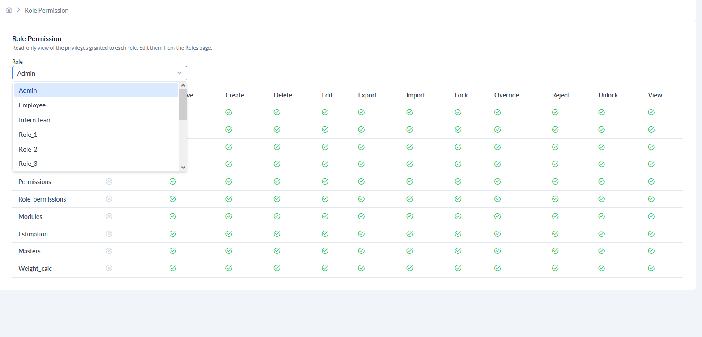
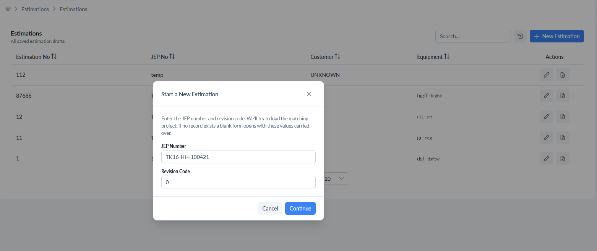

1. Introduction
1.1 Purpose of the Manual
This Administrator User Manual has been developed to provide comprehensive guidance for
administrators
responsible for managing and maintaining the DTEAP.
The manual serves as a reference document for all administrative functions available within the
application
and explains how administrators can effectively manage system data, users, permissions, security
settings, and
application configurations.
The objective of this document is to:
- Provide a detailed understanding of the DTEAP platform.
- Explain administrative responsibilities and system governance.
- Guide administrators through system configuration and maintenance activities.
- Describe user access management procedures.
- Explain security and permission management.
- Provide instructions for managing master data used throughout the application.
- Document system workflows and best practices.
- Serve as a training and reference guide for new administrators.
This manual should be used as the primary reference document when performing any administrative
activity
within the DTEAP application.
1.2 Intended Audience
This manual is intended exclusively for users who have been assigned administrative responsibilities
within
the DTEAP application.
The primary audience includes:
System Administrators
System Administrators are responsible for managing the overall application configuration and user
access.
Typical responsibilities include:
- Creating and maintaining user accounts.
- Managing roles and permissions.
- Configuring application modules.
- Managing user groups.
- Maintaining master data.
- Monitoring access control policies.
- Supporting business users.
Application Administrators
Application Administrators are responsible for maintaining operational data and ensuring that
business
processes function correctly within the application. Typical responsibilities include:
- Maintaining reference data.
- Managing exchange rates.
- Managing material information.
- Managing costing parameters.
- Managing calculation formulas.
- Supporting business operations.
IT Support Personnel
Authorized support personnel may use this manual while performing:
- User support activities.
- Access issue resolution.
- Permission troubleshooting.
- Administrative maintenance.
This manual is not intended for general end users who only consume data or perform operational
business
activities.
1.3 Scope of the Application
The DTEAP application is an enterprise web-based platform designed to support technical, commercial,
and
administrative activities through centralized data management and role-based access control.
The application provides administrative functionality for:
Master Data Management
Management of organizational reference data including: Countries, Currencies, Exchange Rates, Units
of
Measure, Material Categories, Materials, Material Rates, Equipment Categories, Manufacturing
Locations,
Formula Definitions, and Labour Categories.
User Administration
Management of: User Accounts, User Roles, User Permissions, User Groups, and Group Membership.
Security Administration
Configuration and maintenance of: Roles, Permissions, Modules, Access Rights, and Authorization
Controls.
Application Governance
Support for: Controlled data management, Standardized business rules, Access management, Security
compliance,
and Data integrity.
The application acts as a centralized repository for administrative and business configuration data
used
across estimation, costing, and operational processes.
1.4 Administrator Responsibilities
Administrators play a critical role in maintaining the integrity, security, and operational
effectiveness of
the DTEAP application. The responsibilities of an administrator include:
User Management
- Creating new users.
- Updating user information.
- Assigning appropriate roles.
- Activating or deactivating users.
- Managing user access.
Role Management
- Creating roles.
- Modifying role definitions.
- Assigning permissions to roles.
- Reviewing role access periodically.
Permission Management
- Ensuring permissions are accurately defined.
- Ensuring users receive only the access necessary to perform their duties.
- Preventing unauthorized access.
Master Data Maintenance
Administrators are responsible for maintaining accurate reference data including: Currency
information,
Exchange rates, Material information, Equipment categories, and Formula configurations.
Security Governance
- Enforcing access control policies.
- Monitoring security compliance.
- Reviewing access assignments regularly.
- Ensuring segregation of duties where required.
Data Integrity
- Ensuring data entered into the system is accurate.
- Avoiding duplicate records.
- Properly deactivating obsolete records.
- Maintaining consistent configuration data.
1.5 DTEAP System Overview
The DTEAP is a centralized web-based application used to manage
administrative, commercial, and technical reference data required by the organization. The
application
provides a structured environment for managing master data, controlling access, and supporting
business
operations through configurable modules and role-based security.
The system is organized into several major functional areas:
Dashboard
Provides a centralized overview of: Projects, Customers, Estimations, User activities, and
Administrative
functions.
Masters
Provides management of: Reference Data, Materials, Costing Data, Formula Configurations, and Exchange
Rates.
Administration
Provides management of: Users, Roles, Permissions, Modules, Groups, and Group Members.
Weight Calculator
Provides engineering calculations for: Tubes, Pipes, Plates, Rods, Forgings, Shell Flanges, Studs,
and
Tubesheets. The Weight Calculator automatically calculates raw and finished weights using predefined
engineering formulas maintained within the application.
Estimation Module
Supports creation and management of project estimations using: JEP Numbers, Material Data, Weight
Calculations, Currency Conversion, and Duty Calculations. The application integrates with external
project
information sources to automatically populate project details based on the supplied project
identifiers.
1.6 Security Architecture Overview
DTEAP uses a Role-Based Access Control (RBAC) security model to ensure that users can only access
information
and functionality relevant to their responsibilities. The security architecture consists of the
following
components:
Modules
Modules represent functional areas of the application. Examples include: Users, Roles, Permissions,
Masters,
and Estimation.
Permissions
Permissions define specific actions that can be performed. Examples include: View, Create, Edit,
Delete,
Approve, Export, and Import.
Roles
Roles are collections of permissions assigned to users. Examples: Administrator, Estimator, Manager.
Groups
Groups provide a mechanism for managing users collectively. A group may contain multiple users and
may be
associated with one or more roles.
Users
Users receive access through Direct Role Assignment or Group Membership. The relationship can be
represented
as:
Permission
↓
Module
↓
Role
↓
Group (Optional)
↓
User
This architecture provides flexibility, scalability, and enhanced security management.
1.7 Terminology and Definitions
The following terms are frequently used throughout this manual.
| Term |
Definition |
| User |
An individual with authorized access to the application |
| Role |
A collection of permissions assigned to users |
| Permission |
An action that can be performed within the application |
| Module |
A functional area of the application |
| Group |
A collection of users managed together |
| Master Data |
Reference data used throughout the application |
| Active Record |
A record available for operational use |
| Inactive Record |
A record retained but unavailable for selection |
| Exchange Rate |
Conversion factor between currencies |
| Weight Calculator |
Module used for engineering weight calculations |
| JEP Number |
Project identifier used for estimation creation |
| Estimation |
Cost and material assessment generated within the application |
| Currency Master |
Repository of supported currencies |
| Formula Master |
Repository of engineering calculation formulas |
2. Getting Started
2.1 System Requirements
DTEAP is a web-based application that can be accessed through a supported web browser without
requiring local
software installation.
Supported Browsers
- Google Chrome (Recommended)
- Microsoft Edge
- Mozilla Firefox
For optimal performance, administrators should use the latest browser version approved by the
organization.
Browser Settings
Ensure the following settings are enabled: JavaScript, Cookies, and Pop-up Windows (for approved
application
URLs).
2.2 Accessing the Application
The DTEAP application is accessible through the URL provided by the system administrator or IT
department.
Steps
- Open a supported web browser.
- Enter the DTEAP application URL.
- Press Enter.
- The Login screen will be displayed.
Users must have a valid account before accessing the application.
2.3 Login Procedure
Authorized users can access the application using their assigned credentials.
Login Steps
- Open the DTEAP Login page.
- Enter the Username.
- Enter the Password.
- Click the Login button.
Upon successful authentication, the system redirects the user to the Dashboard.
Login Validation
The system verifies: Username, Password, User Status, Assigned Roles, and Associated Permissions.
Users with
inactive accounts will not be allowed to access the application.
Logout Procedure
- Click the User Profile icon.
- Select Logout.
- The current session will be terminated.
Users should always log out after completing their work.
2.4 Dashboard Overview
The Dashboard is the default landing page displayed after successful login. It provides
administrators with a
consolidated view of application activity and quick access to major modules.
Depending on assigned permissions, the Dashboard may display the following metrics and widgets:
- Total Estimations: Aggregate count of all estimations, with new estimations
added this month highlighted below.
- Total Projects: Aggregate count of all registered projects, showing how many
are currently active.
- Total Customers: Aggregate count of all customers in the system, with newly
added customers highlighted.
- Comments: Count of unread comments and responded comments on active
estimations.
- Create New Estimation: A prominent card with a "+" button allowing quick access
to start a new estimation for a customer or project.
- Recent Estimations: A list of the most recently created or modified estimation
records, displaying the estimation name, JEP number, value in Lakhs (₹), status badge
(Draft/Submitted), and timestamp.
- Recent Activity: A chronological feed of recent administrative actions showing
user activity updates with timestamps.
- Project Progress: Visual progress bars for active projects showing completion
percentage (e.g., Refinery Expansion Phase II – 72%, Metro Rail Signalling Upgrade – 45%).
- Top Customers: A ranked list of top customers by estimation value, showing
customer name, number of estimations, and total value in Crores (₹ Cr).

Screenshot: DTEAP Dashboard
Overview
Create New Estimation
The Dashboard provides access to the Create New Estimation function. When selected:
- The user is prompted to enter: JEP Number and Revision Code.
- Upon submission, the system retrieves available project information from the integrated project
data
source.
- Project-related information is automatically populated in the estimation record.
The retrieved information may include: Customer Information, Project Details, Equipment Information,
and
Material Information.
2.5 Navigation Structure
The application is organized into multiple functional areas accessible through the main navigation
menu.
Dashboard
Provides: System Overview, Activity Summary, and Quick Access Functions.
Estimation
Provides functionality for: Creating Estimations, Managing Estimations, Reviewing Estimation Data,
Material
Costing, Currency-Based Cost Calculations, and Duty Calculations.
Weight Calculator
Provides weight calculation utilities for: Tube, Pipe, Plate, Rod, Forging, Shell Flange, Studs, and
Tubesheet. Material-driven weight calculation: density auto-loads from the selected material; input
dimensions in mm, output weight in kg. The active formula is chosen from the material category.
Calculated values may be used during estimation preparation.
Weld Calculator
Provides weld material estimation per joint category, thickness, and process split. Supports weld
categories including L/S, C/S, Shell # Nozzle, and Nozzle # D'End. Calculates total overlay
consumable requirements for CS-SAW, CS-SAW Flux, CS-SMAW, and CS-GTAW with configurable factor
multipliers.
Masters
Provides maintenance of reference and configuration data including: Countries, Currencies, Exchange
Rates,
Material Categories, Material Rates, and Formula Definitions.
Administration
Provides access to: User Management, Role Management, Permission Management, Module Management, Group
Management, and Group Member Management.
Help
Provides access to the User Manual for on-screen reference documentation.
2.6 User Interface Components
The application uses a consistent interface design across all modules.
Action Buttons
| Button |
Description |
| Add |
Create a new record |
| Edit |
Modify an existing record |
| Save |
Save changes |
| Cancel |
Discard changes |
| Export |
Download records |
| Search |
Locate records |
Status Indicators
Records may display statuses such as: Active, Inactive, Draft, and Approved.
2.7 Search, Sorting and Filtering
Most modules support record management through search and filtering capabilities.
Search
Users can search records using: Names, Codes, Descriptions, and Keywords.
Sorting
Records can be sorted by: Name, Code, Date, and Status.
Filtering
Users can filter records using available criteria specific to each module. Examples include: Active
Records,
Inactive Records, Categories, and Record Types.
2.8 Export Functionality
Many administrative modules support exporting records for reporting and analysis purposes.
Supported Formats
Usage
- Open the desired module.
- Apply any required search or filter criteria.
- Select the desired format.
- Download the generated file.
Exported files should be handled according to organizational data security policies.
3. Administrator Quick Reference Guide
3.1 Purpose of the Quick Reference Guide
The Administrator Quick Reference Guide provides a summarized view of the most frequently performed
administrative activities within the DTEAP application. This section is intended to help
administrators
quickly identify the module and navigation path required to perform common tasks without having to
browse
through the entire manual.
3.2 Common Administrative Tasks
| Activity |
Navigation Path |
| Create New User |
Administration → Users → Add User |
| Edit Existing User |
Administration → Users → Edit |
| Deactivate User |
Administration → Users → Edit → Click On Selected Active Status And Save |
| Create New Role |
Administration → Roles → Add Role |
| Edit Existing Role |
Administration → Roles → Edit |
| Create New Permission |
Administration → Permissions → Add Permission |
| Edit Permission |
Administration → Permissions → Edit |
| Create New Module |
Administration → Modules → Add Module |
| Edit Module |
Administration → Modules → Edit |
| Create New Group |
Administration → Groups → Add Group |
| Assign Role to Group |
Administration → Groups → Edit |
| Add User to Group |
Administration → Group Members |
| Remove User from Group |
Administration → Group Members |
| View Role Permissions |
Administration → Role Permissions |
| Add New Currency |
Masters → Currency |
| Update Exchange Rate |
Masters → Exchange Rates |
| Add New Material |
Masters → Materials |
| Update Material Rate |
Masters → Material Rates |
| Create New Estimation |
Dashboard → Create New Estimation |
| Calculate Material Weight |
Weight Calculator |
| Export Data |
Export Button Available in Module |
3.3 Administrator Responsibilities Matrix
| Area |
Administrator Responsibility |
| User Management |
Create, edit, activate and deactivate users |
| Role Management |
Create and maintain system roles |
| Permission Management |
Configure permission definitions |
| Module Management |
Manage available application modules |
| Group Management |
Create and maintain user groups |
| Master Data Management |
Maintain reference and configuration data |
| Exchange Rate Management |
Maintain currency conversion rates |
| Material Management |
Maintain materials and material rates |
| Formula Management |
Maintain calculation formulas |
| Estimation Governance |
Ensure estimation-related master data is accurate |
| Access Control |
Control system access and security |
3.4 Administrative Workflow Overview
Step 1: Create Reference Data
Before users begin working with the application, administrators must ensure that all required master
data is
available. Examples include: Countries, Currencies, Exchange Rates, Materials, Material Categories,
and
Formula Definitions.
Step 2: Configure Security Structure
The security structure should be configured before creating operational users. The recommended
sequence is:
- Create Modules
- Create Permissions
- Create Roles
- Assign Permissions to Roles
- Create Groups (Optional)
- Assign Roles to Groups
Step 3: Create Users
- Create User Accounts.
- Assign appropriate Roles.
- Add Users to Groups if required.
- Verify access.
Step 4: Validate Access
Administrators should verify: Module Visibility, Permission Access, User Restrictions, and Group
Assignments
before users begin using the application.
3.5 Quick Workflow – Create New User
Navigation: Administration → Users → Add User
- Open Users Module.
- Click Add User.
- Enter user information.
- Assign role(s).
- Set Active Status.
- Save the record.
Result: The user account becomes available for login according to the assigned
permissions.
3.6 Quick Workflow – Create New Role
Navigation: Administration → Roles → Add Role
- Open Roles Module.
- Click Add Role.
- Enter Role Code.
- Enter Role Name.
- Configure role details.
- Save the role.
Result: The role becomes available for permission assignment and user allocation.
3.7 Quick Workflow – Create New Permission
Navigation: Administration → Permissions → Add Permission
- Open Permissions Module.
- Click Add Permission.
- Enter Permission Code.
- Enter Permission Name.
- Save the permission.
Result: The permission becomes available for role configuration.
3.8 Quick Workflow – Create New Group
Navigation: Administration → Groups → Add Group
- Open Groups Module.
- Click Add Group.
- Enter Group Code.
- Enter Group Name.
- Assign roles.
- Save.
Result: The group becomes available for user assignment.
3.9 Quick Workflow – Create New Estimation
Navigation: Dashboard → Create New Estimation
- Click Create New Estimation.
- Enter JEP Number.
- Enter Revision Code.
- Click Continue.
- Allow the system to retrieve project information.
- Review automatically populated project data.
- Verify customer details, equipment details, and material information.
- Continue with estimation preparation.
Depending on project availability, the system may automatically populate: Customer Information,
Project
Information, Equipment Information, Material Information, and Estimation Reference Information.
Administrators should ensure: Master data is correctly configured, Currency data is current, Exchange
rates
are updated, Material rates are maintained, and Formula configurations are valid.
3.10 Quick Workflow – Update Exchange Rates
Navigation: Masters → Exchange Rates
- Open Exchange Rates.
- Locate the currency.
- Click Edit.
- Enter the updated exchange rate.
- Save changes.
Updated exchange rates are used in estimation and costing calculations where applicable.
3.11 Quick Workflow – Calculate Material Weight
Navigation: Weight Calculator
- Select Material Category from the dropdown (e.g., Forging, Tube, Pipe, Plate,
Rod, Shell Flange, Studs, Tubesheet).
- Select a Material from the material dropdown. Grade, Density, Specification,
and Description auto-populate from the material master.
- Enter dimensional inputs: Outer Diameter (mm), Thickness (mm).
- Enter Quantity (no. of forgings/pieces).
- Select Weight Type (Raw Weight or Finished Weight).
- The system displays the Result with the calculated weight in kg, along with the
formula used for calculation (e.g., Forging: (π/4) × 300² × 300 × 7.85 × 10 × 10⁻⁶).
- Click Save to Database to persist the calculation if required.

Screenshot: Weight Calculator –
Forging Mode
3.11b Quick Workflow – Weld Material Estimation
Navigation: Weld Calculator
- Select Category of weld from the dropdown (e.g., Shell # Nozzle).
- Enter Thickness (mm) and ID (mm).
- Enter No. of weld and select Weld details (e.g., N5/N6/N9).
- The system calculates and displays: Effective ID, Total Length, Suggested WM (kg/m), and Weld
Material (kg/m).
- Review the process split rows for SAW, SMAW, and
GTAW, each showing WM (kg/m) and percentage.
- Review the Total Overlay Consumable table showing calculated consumables
(CS-SAW, CS-SAW Flux, CS-SMAW, CS-GTAW) with factors and round-off values.

Screenshot: Weld Calculator – Shell #
Nozzle Mode
3.12 Recommended Administrative Best Practices
Access Management
- Assign only required permissions.
- Periodically review user access.
- Deactivate unused accounts.
Master Data Maintenance
- Review exchange rates regularly.
- Maintain current material rates.
- Remove duplicate records.
- Verify formula configurations.
Security
- Avoid sharing administrator credentials.
- Review role assignments periodically.
- Validate permission structures after major updates.
Data Integrity
- Validate imported information.
- Verify master data changes.
- Maintain consistent naming conventions.
4. Master Data Management
4.1 Masters Overview
Purpose
The Masters module serves as the central repository for all reference and configuration data used
throughout
the DTEAP application. Master data forms the foundation of the system and is utilized by multiple
modules
including: Estimation Management, Weight Calculator, Cost Calculations, Currency Conversion, User
Administration, and Reporting.
Accurate master data is essential for ensuring consistency, calculation accuracy, and operational
efficiency
across the application. The Masters module allows administrators to create, maintain, update, and
manage
reference data without requiring system-level changes.
Importance of Master Data
Master data is used by the application to standardize information and eliminate inconsistencies.
Examples
include: Currency definitions, Country definitions, Material specifications, Exchange rates,
Equipment
categories, Manufacturing locations, and Formula definitions.
Any changes made within master records are automatically reflected in the modules that consume the
corresponding data. Administrators should ensure that master records remain accurate and up-to-date
to prevent
operational or calculation errors.
4.1.1 Master Data Categories
The Masters module contains multiple categories of administrative data.
| Category |
Items |
| Reference Data |
Countries, Currencies, Units of Measure (UOM), UOM Conversions, Financial Year Periods,
Exchange Rates
|
| Material Management |
Material Categories, Materials, Material Rates, Plate Rates, Tube Rates, Fastener Rates,
Forging
Rates, Gasket Rates, Special Components, Special Component Rates |
| Manufacturing Data |
Manufacturing Locations, Equipment Categories, Labour Categories, Machines, Jigs &
Fixtures |
| Formula Management |
Formula Master |
4.1.2 Accessing the Masters Module
Navigation: Main Menu → Masters
Upon opening the Masters module, the system displays a categorized tile-based layout of available
master records organized into the following sections:
- Reference Data: Countries, Currencies, Units of Measure, UOM Conversions,
Statuses, Financial Year Periods, Exchange Rates.
- Materials & Components: Material Categories, Materials, Material Rates,
Material Handlings, Pipe Schedules, Plate Rates, Tube Rates, Fastener Rates, Forging Rates,
Gasket Rates, Special Components, Special Component Rates.
- Equipment & Production: Equipment Categories, Component Types, Machines,
Jigs/Fixtures, Labour Categories, Section B Activities, Section B Sub-Sections, Manufacturing
Locations, Other Expenses.
- Calculation: Formula Master.
Each tile shows the master name and a brief description. Click any tile to navigate to the
corresponding master data management screen. A Filter masters... search box at the
top-right allows quick filtering of tiles by name. Depending on assigned permissions, administrators
may: View records, Create records, Edit records, Activate records, Deactivate records, and Export
records.

Screenshot: Masters Module –
Tile-Based Overview Layout
4.1.3 Master Record Layout
Most master screens follow a standardized layout including: a Master Listing Area displaying records
in
tabular format, a Search Panel, and Action Controls.
| Action |
Description |
| Add |
Create new record |
| Edit |
Modify existing record |
| View |
View record details |
| Export |
Export records |
| Search |
Filter records |
| Reset |
Clear search criteria |
4.1.4 Creating Master Records
- Open the required master category.
- Click Add.
- Enter the required information.
- Verify entered values.
- Click Save.
4.1.5 Editing Master Records
- Open the desired master category.
- Locate the required record.
- Click Edit.
- Modify the necessary information.
- Save the changes.
Administrators should exercise caution when modifying records already being used by operational
processes.
4.1.6 Active and Inactive Records
Active Records are available for selection, appear in dropdown lists, participate in
calculations, and can be referenced by other modules.
Inactive Records are retained in the system, cannot be selected in operational
processes,
and remain available for historical reference. Administrators are encouraged to deactivate obsolete
records
instead of deleting them.
4.1.7 Export Functionality
- Open the desired master category.
- Apply search criteria if required.
- Select export format.
- Download the generated file.
4.1.8 Impact of Master Data on System Operations
| Master Data |
Impact |
| Currency |
Currency conversion calculations |
| Exchange Rates |
Estimation cost calculations |
| Material Rates |
Material costing |
| Formula Master |
Weight calculations |
| UOM Conversion |
Quantity conversions |
| Manufacturing Locations |
Costing and planning |
| Material Categories |
Material classification |
4.2 Country Master
The Country Master maintains the list of countries used across the application for reference,
sourcing, and
currency management purposes.
4.2.1 Viewing Countries
Navigate to Masters → Country Master to view all configured country records in a tabular listing.
4.2.2 Adding a Country
- Open Country Master.
- Click Add.
- Enter Country Code and Country Name.
- Set Active status.
- Click Save.
4.2.3 Editing a Country
- Locate the country record.
- Click Edit.
- Modify required fields.
- Save changes.
4.2.4 Activating / Deactivating Countries
Use the Active Status toggle when editing a country record to activate or deactivate it. Inactive
countries
will not appear in operational selection lists.
4.2.5 Exporting Country Data
Export within the Country Master to download records in CSV or Excel format.
🖼Screenshot: Country Master Screen
[ Add screenshot
here
]
4.3 Currency Master
The Currency Master maintains all supported currencies used in costing and estimation calculations.
4.3.1 Viewing Currencies
Navigate to Masters → Currency Master.
4.3.2 Adding a Currency
- Open Currency Master.
- Click Add.
- Enter Currency Code (e.g., INR, USD).
- Enter Currency Name.
- Set Active status.
- Save.
4.3.3 Editing a Currency
- Locate the currency record.
- Click Edit.
- Modify required fields.
- Save.
4.3.4 Activating / Deactivating Currencies
Inactive currencies will not be available for selection in estimation and costing forms.
4.3.5 Exporting Currency Data
Export to download currency records in the supported format.
4.4 Units of Measure (UOM)
The UOM Master defines measurement units used across materials, costing, and weight calculations.
4.4.1 Viewing UOM Records
Navigate to Masters → UOM.
4.4.2 Creating UOM Records
- Click Add.
- Enter UOM Code and UOM Name.
- Save.
4.4.3 Editing UOM Records
- Locate the record.
- Click Edit.
- Modify fields.
- Save.
4.4.4 Activating / Deactivating UOM Records
Manage the Active Status flag to control availability.
4.4.5 Exporting UOM Data
Export to download UOM records.
4.5 UOM Conversions
UOM Conversions define conversion factors between different units of measure.
4.5.1 Viewing Conversion Records
Navigate to Masters → UOM Conversions.
4.5.2 Creating Conversion Records
- Click Add.
- Select Source UOM.
- Select Target UOM.
- Enter Conversion Factor.
- Save.
4.5.3 Editing Conversion Records
- Locate record.
- Click Edit.
- Update conversion factor.
- Save.
4.5.4 Exporting Conversion Data
Export to download conversion records.
4.6 Financial Year Periods
Financial Year Periods define the organizational financial calendar used for reporting and costing
reference.
4.6.1 Viewing Financial Periods
Navigate to Masters → Financial Year Periods.
4.6.2 Creating Financial Periods
- Click Add.
- Enter Period Name, Start Date, and End Date.
- Save.
4.6.3 Editing Financial Periods
- Locate record.
- Click Edit.
- Update fields.
- Save.
4.6.4 Activating / Deactivating Financial Periods
Manage the Active Status to control which periods are operationally available.
4.7 Exchange Rates
Exchange Rates define the conversion values between currencies used during estimation costing.
4.7.1 Viewing Exchange Rates
Navigate to Masters → Exchange Rates.
4.7.2 Creating Exchange Rates
- Click Add.
- Select Source Currency.
- Select Target Currency.
- Enter Rate.
- Save.
4.7.3 Updating Exchange Rates
- Locate the currency pair.
- Click Edit.
- Update the exchange rate value.
- Save.
4.7.4 Exporting Exchange Rate Data
Export to download exchange rate records.
Exchange rates should be reviewed and updated regularly to ensure accurate
estimation
costing calculations.
4.8 Material Categories
Material Categories provide a classification structure for organizing materials within the
application.
4.8.1 Viewing Categories
Navigate to Masters → Material Categories.
4.8.2 Creating Categories
- Click Add.
- Enter Category Code and Category Name.
- Save.
4.8.3 Editing Categories
- Locate record.
- Click Edit.
- Modify fields.
- Save.
4.8.4 Activating / Deactivating Categories
Inactive categories will not appear in material selection forms.
4.9 Materials
The Materials master maintains the complete list of materials used in estimations, weight
calculators, weld calculators, and costing calculations.
4.9.1 Viewing Materials
Navigate to Masters → Materials.
4.9.2 Creating and Adding Future Materials
To support future inventory and engineering updates, administrators can add new materials at any
time. Adding a material configures its core engineering parameters and calculation logic:
- Navigate to Masters → Materials and click the + Add button.
- Enter the required material metadata:
- Material Code: Unique code identifier for the material.
- Material Name: Descriptive name (e.g. Duplex Tube).
- Category: Assign a category (e.g. Tube, Pipe, Plate, Forging).
- Grade & Specification: Technical material grade (e.g. SA-789) and
specification references.
- Density (g/cc): The physical density of the material, which is critical
for weight calculations (e.g. 7.85 for steel).
- Configure Calculation Formulas: Users can associate or input specific
engineering formulas (weight and weld formulas) to be used when this material is processed. This
ensures the calculation engine applies the correct mathematical model for raw and finished
weight.
- Click Save.
Result & Global Availability: Once saved, the new material immediately
propagates across the platform. It becomes dynamically selectable in the Weight Calculator, Weld
Calculator, and all dropdowns inside the Estimation details tables without requiring any code
modifications.
4.9.3 Editing Materials and Formula Customization
Existing materials can be modified to update pricing adjustments, density corrections, or change
calculation formulas:
- Locate the material record in the Materials master listing.
- Click the Edit (pencil) icon next to the record.
- Modify required fields (e.g. updating Density, Grade details, or modifying the default formula
string).
- Click Save.
Result: Updated details and formulas are applied dynamically to all subsequent
calculations and new estimations across the platform.
4.9.4 Material Search Features
Users can search materials by: Material Name, Material Code, and Material Category.
4.9.5 Exporting Materials
Export to download material records.
4.10 Material Rates
Material Rates define the unit cost associated with each material, used during estimation cost
calculations.
4.10.1 Viewing Material Rates
Navigate to Masters → Material Rates.
4.10.2 Creating Material Rates
- Click Add.
- Select Material.
- Enter Rate and Currency.
- Save.
4.10.3 Editing Material Rates
- Locate the rate record.
- Click Edit.
- Update the rate.
- Save.
4.10.4 Historical Rate Management
Previous rate records are retained for historical reference and audit purposes.
4.11 Plate Rates
4.11.1 Viewing Plate Rates
Navigate to Masters → Plate Rates.
4.11.2 Creating Plate Rates
- Click Add.
- Enter required fields.
- Save.
4.11.3 Updating Plate Rates
- Locate the record.
- Click Edit.
- Update values.
- Save.
4.12 Tube Rates
4.12.1 Viewing Tube Rates
Navigate to Masters → Tube Rates.
4.12.2 Creating Tube Rates
- Click Add.
- Enter required fields.
- Save.
4.12.3 Updating Tube Rates
- Locate the record.
- Click Edit.
- Update values.
- Save.
4.13 Fastener Rates
4.13.1 Viewing Fastener Rates
Navigate to Masters → Fastener Rates.
4.13.2 Creating Fastener Rates
- Click Add.
- Enter required fields.
- Save.
4.13.3 Updating Fastener Rates
- Locate the record.
- Click Edit.
- Update values.
- Save.
4.14 Forging Rates
4.14.1 Viewing Forging Rates
Navigate to Masters → Forging Rates.
4.14.2 Creating Forging Rates
- Click Add.
- Enter required fields.
- Save.
4.14.3 Updating Forging Rates
- Locate the record.
- Click Edit.
- Update values.
- Save.
4.15 Gasket Rates
4.15.1 Viewing Gasket Rates
Navigate to Masters → Gasket Rates.
4.15.2 Creating Gasket Rates
- Click Add.
- Enter required fields.
- Save.
4.15.3 Updating Gasket Rates
- Locate the record.
- Click Edit.
- Update values.
- Save.
4.16 Special Components
4.16.1 Viewing Components
Navigate to Masters → Special Components.
4.16.2 Creating Components
- Click Add.
- Enter Component Code and Name.
- Save.
4.16.3 Editing Components
- Locate record.
- Click Edit.
- Update fields.
- Save.
4.17 Special Component Rates
4.17.1 Viewing Rates
Navigate to Masters → Special Component Rates.
4.17.2 Creating Rates
- Click Add.
- Select Component.
- Enter Rate and Currency.
- Save.
4.17.3 Updating Rates
- Locate record.
- Click Edit.
- Update rate.
- Save.
4.18 Equipment Categories
4.18.1 Viewing Categories
Navigate to Masters → Equipment Categories.
4.18.2 Creating Categories
- Click Add.
- Enter Category Code and Name.
- Save.
4.18.3 Editing Categories
- Locate record.
- Click Edit.
- Update fields.
- Save.
4.19 Labour Categories
4.19.1 Viewing Categories
Navigate to Masters → Labour Categories.
4.19.2 Creating Categories
- Click Add.
- Enter Category Code and Name.
- Save.
4.19.3 Editing Categories
- Locate record.
- Click Edit.
- Update fields.
- Save.
4.20 Manufacturing Locations
4.20.1 Viewing Locations
Navigate to Masters → Manufacturing Locations.
4.20.2 Creating Locations
- Click Add.
- Enter Location Code and Name.
- Save.
4.20.3 Editing Locations
- Locate record.
- Click Edit.
- Update fields.
- Save.
4.21 Machines
4.21.1 Viewing Machines
Navigate to Masters → Machines.
4.21.2 Creating Machines
- Click Add.
- Enter Machine Code and Name.
- Assign Manufacturing Location.
- Save.
4.21.3 Editing Machines
- Locate record.
- Click Edit.
- Update fields.
- Save.
4.22 Jigs and Fixtures
4.22.1 Viewing Records
Navigate to Masters → Jigs and Fixtures.
4.22.2 Creating Records
- Click Add.
- Enter Code and Name.
- Save.
4.22.3 Editing Records
- Locate record.
- Click Edit.
- Update fields.
- Save.
4.23 Formula Master
The Formula Master stores engineering calculation formulas used by the Weight Calculator and
estimation
modules.
4.23.1 Viewing Formula Records
Navigate to Masters → Formula Master.
4.23.2 Creating Formula Records
- Click Add.
- Enter Formula Code and Name.
- Define formula expression.
- Save.
4.23.3 Editing Formula Records
- Locate record.
- Click Edit.
- Update formula.
- Save.
4.23.4 Formula Administration Best Practices
- Verify formula expressions before saving.
- Test calculations after formula updates.
- Maintain documentation for complex formulas.
- Restrict formula modifications to authorized administrators only.
5. User Administration
5.1 Overview
The User Administration module provides administrators with the ability to manage application access,
user
accounts, security roles, permissions, modules, groups, and group memberships. This module ensures
that users
are granted access only to the features and functionality required to perform their responsibilities
within
the DTEAP application.
The administration framework follows a Role-Based Access Control (RBAC) model, ensuring secure and
controlled
access throughout the application.
5.1 User Management
Purpose
The Users module allows administrators to create, manage, and maintain application user accounts.
Each user
account represents an individual authorized to access the DTEAP application. User accounts
determine: Login
access, Assigned roles, Module visibility, Functional permissions, and Group membership.
Navigation
Administration → Users
Viewing Users
The Users page provides a searchable list of all registered users. Typical information displayed
includes:
Username, Full Name, Employee Code, Email Address, Assigned Roles, Status, and Last Updated Date.

Screenshot: New User Creation –
Direct Role Assignment

Screenshot: New User Creation – Via
Group Assignment
Creating a New User
The New User dialog presents a form with the following fields and a Role Assignment section at the
bottom:
- Navigate to Administration → Users.
- Click + Add User button at the top-right.
- Complete the required fields in the New User dialog.
- Under Role assignment, choose the assignment method:
- Direct role: Select a specific role from the Role dropdown. The user
will have exactly the permissions defined in that role.
- Via group: Select a group from the Group dropdown. The user will
inherit the role assigned to that group (e.g., "The user will inherit role Role_9 from
this group").
- Ensure the Active checkbox is selected.
- Click Save.
| Field |
Description |
| Company |
Organization Name |
| Business Unit |
Associated Business Unit |
| User Name |
Login Username |
| Full Name |
User's Name |
| Email Address |
Official Email ID |
| Employee Code |
Employee Identifier |
| Department |
Department Name |
| Password |
Login Password |
| Active Status |
Account Status |
5.1.3 Editing Existing Users
- Open Users.
- Locate the user.
- Click Edit.
- Modify required information.
- Save changes.
5.1.4 Activating and Deactivating Users
An active user can log in, access assigned modules, and perform permitted actions.
An
inactive user cannot log in or access the application but remains stored for audit
purposes.
Administrators should deactivate users who no longer require access.
5.1.5 Assigning Roles to Users
Roles are assigned during user creation or editing. A user may be assigned a role using one of two
methods:
Direct role (selecting a specific role) or Via group (inheriting a
role from a group assignment).
5.1.6 Editing Existing Users
When editing a user, the Edit User dialog presents two tabs:
- Details: Allows modification of all user fields (Company, Business Unit, User
Name, Name, Email, Employee Code, Department, Password, Active status) and role assignment.
- Effective Permissions: A read-only view showing "What this user can do today —
resolved from all assigned roles plus group → role chains." This tab displays a consolidated
list of all permissions organized by module (e.g., Estimations, Users, Groups), showing each
permission with its inheritance path (e.g., "via group Group_2 → role Role_9"). It also shows
Per-Section Edit Access for estimation sections (Show Section A - Material
Cost, Show Section R - RCCP, Show Section C - Other Expense, Show Section D - Material
Handling).

Screenshot: Edit User – Details
Tab

Screenshot: Edit User – Effective
Permissions Tab
5.1.7 User Search and Export
The Users listing page provides a search box at the top-right ("Search user, name, email...") and
CSV/Excel export buttons. User records can be exported for user audits, access reviews, and
compliance
reporting.
5.2 Role Management
Purpose
Roles are used to group permissions together. Instead of assigning individual permissions directly to
users,
permissions are assigned to roles and roles are assigned to users. This simplifies administration
and improves
security management.
Navigation
Administration → Roles
5.2.2 Creating a Role

Screenshot: New Role Creation –
Permission Configuration

Screenshot: New Role Creation –
Estimator Template Applied
- Navigate to Administration → Roles.
- Click + Add Role.
- Enter Role Code and Role Name (both required).
- Optionally enter a Description.
- Set the Active status.
- Under the Permissions section, configure access rights:
- Apply template: Select a pre-defined template (e.g., Estimator, Admin)
from the dropdown and click Apply to auto-fill permissions. The
template description is displayed (e.g., "Create + edit estimations across all four
sections, plus read-only access to masters and calculators"). Templates pre-fill a
starting set you can tweak before saving.
- Clear all: Reset all permission checkboxes.
- Permissions are organized by module (e.g., Estimations, Users, Groups). Each module
shows All and None quick-select buttons.
- Individual permission checkboxes include: View, Create, Edit, Delete, Approve, Reject,
Export to Excel, Submit/lock revisions, Revise locked estimations, Design/Material
Fields, Costing Related Fields.
- Per-Section Access: Controls which estimation steps are visible — Show
Section A - Material Cost, Show Section R - RCCP, Show Section C - Other Expense, Show
Section D - Material Handling.
- Click Save.
The role can then be assigned to users or groups.
5.2.3 Editing Roles
Administrators can: Update descriptions, Modify role details, Activate roles, Deactivate roles, and
adjust permission checkboxes. Role
modifications immediately impact users assigned to those roles.
5.2.4 Role Status Management
An Active role is available for assignment. An Inactive role is
unavailable
for assignment, though existing historical records remain unchanged.
5.2.5 Exporting Roles
Role information can be exported for security reviews, compliance audits, and access verification.
5.3 Permission Management
Purpose
Permissions define the actions users may perform within the system. Permissions represent the
smallest unit
of access control. Examples include: View, Create, Edit, Delete, Approve, Export, Import, Lock,
Unlock,
Override, and Reject.
Navigation
Administration → Permissions
5.3.2 Creating Permissions

Screenshot: New Permission Creation
Screen
- Navigate to Administration → Permissions.
- Click + Add.
- Enter Permission Code (required), Permission Name (required),
and optionally a Description.
- Ensure the Active checkbox is selected.
- Click Save.
The Permissions listing page displays columns: Code, Name, Description, Active status, and Actions
(Edit / Delete).
5.3.3 Editing Permissions

Screenshot: Edit Permission
Screen
Administrators may: Update permission code, Update permission name, Update descriptions, toggle the
Active status, and Save changes.
5.3.5 Permission Export
Permission lists can be exported in CSV or Excel for documentation and audit purposes.
5.4 Module Management
Purpose
Modules represent major functional areas within the DTEAP application. Examples: Dashboard,
Estimation,
Weight Calculator, Masters, Users, Roles, and Permissions. Permissions are assigned against modules.
Navigation
Administration → Modules
5.4.2 Creating Modules

Screenshot: New Module Creation
Screen
- Open Modules.
- Click + Add.
- Enter Module Code (required), Module Name (required), and
Display Order (required numeric value).
- Ensure the Active checkbox is selected.
- Click Save.
The Modules listing page displays columns: Code, Name, Order, Active status, and Actions (Edit /
Delete).
5.4.3 Editing Modules

Screenshot: Edit Module Screen
Administrators may update: Module Code, Module Name, Display Order, and Active Status.
5.4.3 Editing Modules
Administrators may update: Display Name, Display Order, Module Description, and Active Status.
5.4.4 Display Order Management
The Display Order field controls the sequence in which modules appear in the navigation menu.
5.4.5 Exporting Module Data
Module definitions may be exported for administrative review.
5.5 Role Permission Matrix

Screenshot: Role Permission Matrix
View
Purpose
The Role Permission Matrix provides a consolidated view of permissions assigned to each role. This
feature
allows administrators to verify access control configurations.
Navigation
Administration → Role Permissions
| Module |
Create |
View |
Edit |
Delete |
Export |
Approve |
| Module Name |
Yes / No |
Yes / No |
Yes / No |
Yes / No |
Yes / No |
Yes / No |
Administrators should periodically review: Excessive permissions, Duplicate assignments, and Obsolete
access
rights to maintain security compliance.
5.6 Group Management
Purpose
Groups allow administrators to manage multiple users collectively. Groups simplify access
administration by
allowing roles to be assigned at group level.
Navigation
Administration → Groups
5.6.2 Creating Groups

Screenshot: New Group Creation
Screen
- Open Groups.
- Click + Add Group.
- Enter Group Code (required), Group Name (required), and
optionally a Description.
- Ensure the Active checkbox is selected.
- Assign a Role from the dropdown (e.g., Designer).
- Click Save.
The Groups listing page displays columns: Code, Name, Description, Role (shown as a badge), Active
status, and Actions (Members icon, Edit, Delete).
5.6.3 Editing Groups

Screenshot: Edit Group Screen
Administrators may: Change group code and name, Modify the description, Change the assigned role,
Toggle the Active status, and Save changes.
5.6.4 Group Members Action
Inside the Groups data table, administrators can click the dedicated Members action
button (group icon) for a specific group. This opens a "Members of [Group Name]" dialog showing a
list of all users with checkboxes, allowing administrators to select or deselect users for that
group.

Screenshot: Members of Group
Dialog
5.6.5 Assigning Roles to Groups
Users belonging to a group automatically inherit roles assigned to that group. This reduces manual
administration effort.
5.6.6 Exporting Group Data
Group information can be exported for administrative review and audit purposes.
5.7 Group Members Management
Purpose
Group Members management controls which users belong to specific groups.
Navigation
Administration → Group Members
5.7.2 Adding Members
The Members dialog displays all available users as a checklist with the format "Name (Username)". A
search box at the top allows filtering users. A "select all" checkbox allows bulk selection.
- Navigate to Administration → Groups and click the Members icon for the desired group.
- The "Members of [Group Name]" dialog opens, listing all available users.
- Use the search box to find specific users, or browse the list.
- Select the checkbox next to each user to add to the group.
- Click Save to confirm the member assignments.
5.7.3 Removing Members
- Open the Members dialog for the group.
- Uncheck the checkbox next to the user to be removed.
- Click Save to apply changes.
- Alternatively, click Reset to restore the original selections before saving.
5.7.4 Saving Membership Changes
Changes become effective immediately after saving. User access is updated according to the roles
associated
with the group.
5.8 User Access Model
The DTEAP application follows the following access hierarchy:
Permission
↓
Module
↓
Role
↓
Group (Optional)
↓
User
This hierarchy ensures: Controlled access, Reduced administrative effort, Centralized security
management,
and Consistent permission assignment.
Best Practices
- Grant minimum required access.
- Periodically review permissions.
- Deactivate unused accounts.
- Maintain accurate group structures.
- Review role assignments regularly.
- Avoid assigning excessive privileges.
6. Security and Access Control
6.1 Overview
The DTEAP application implements a structured security model to ensure that users only have access to
the
information and functionality required to perform their assigned responsibilities. The security
framework is
designed to: Protect sensitive information, Prevent unauthorized access, Enforce role-based
responsibilities,
Maintain data integrity, Support audit and compliance requirements, and Simplify user
administration.
6.2 Security Architecture
DTEAP follows a Role-Based Access Control (RBAC) model. Under this model, permissions are assigned to
roles,
roles are assigned to users or groups, and access is automatically inherited.
Permission
↓
Module
↓
Role
↓
Group (Optional)
↓
User
This layered structure simplifies administration and ensures consistency across the application.
6.3 Modules
Modules represent functional areas within the application. Examples include: Dashboard, Estimation,
Weight
Calculator, Masters, Users, Roles, Permissions, Groups, and Reports.
Each module acts as a container for permissions and controls what functionality is available to
users. If a
user does not have access to a module, the module may not appear in the navigation menu, and the
user cannot
access related pages.
6.4 Permissions
Permissions define specific actions that can be performed within a module.
| Permission |
Description |
| View |
View records |
| Create |
Create new records |
| Edit |
Modify records |
| Delete |
Remove records |
| Approve |
Approve transactions |
| Reject |
Reject transactions |
| Export |
Export records |
| Search |
Filter and search for records |
| Download XLSX |
Export data specifically in Excel (.xlsx) format |
| Download CSV |
Export data specifically in Comma-Separated Values (.csv) format |
| Import |
Import records |
| Lock |
Lock records |
| Unlock |
Unlock records |
| Override |
Override system restrictions |
6.6 Groups
Groups provide an additional layer of access management. A group is a collection of users who share
similar
responsibilities. Examples: Estimation Team, Finance Team, Procurement Team, Project Management
Team.
When a role is assigned to a group, all members of that group inherit the assigned role. Groups allow
administrators to: Assign roles collectively, Simplify user maintenance, Standardize permissions
across teams,
and Reduce manual role assignments.
6.7 Users
Users represent individual application accounts. Each user may receive access through:
Direct Role Assignment
Estimator Role
↓
John Smith
Group-Based Assignment
Estimator Role
↓
Estimation Team Group
↓
John Smith
Both approaches are supported depending on organizational requirements.
6.8 Access Inheritance
Access inheritance occurs when permissions are assigned indirectly through groups and roles.
Step 1: Create Permission → Create Estimation
Step 2: Assign Permission to Module → Estimation
Step 3: Assign Permission to Role → Estimation Administrator
Step 4: Assign Role to Group → Estimation Team
Step 5: Add User to Group → John Smith
Result: John Smith automatically receives permission to create estimations.
6.9 Module Visibility Rules
Full Access: The user can view, create, edit, delete, and export records.
Limited Access: The user can view records only or access specific functions.
No Access: The module is hidden from the user.
6.10 Permission Matrix
| Module |
View |
Create |
Edit |
Delete |
Export |
Approve |
| Users |
Yes |
Yes |
Yes |
No |
Yes |
N/A |
| Roles |
Yes |
Yes |
Yes |
No |
Yes |
N/A |
| Estimation |
Yes |
Yes |
Yes |
No |
Yes |
Yes |
6.11 Security Best Practices
Principle of Least Privilege
Users should receive only the permissions necessary to perform their assigned tasks. Avoid granting:
Unnecessary administrative rights, Excessive approval permissions, and Full access when limited
access is
sufficient.
Periodic Access Reviews
Administrators should periodically review: User accounts, Roles, Permissions, and Group memberships
to ensure
that access remains appropriate.
User Deactivation
When users no longer require access: Deactivate the user account, Remove unnecessary role
assignments, and
Update group memberships if required.
Segregation of Duties
Where possible: Creation and approval activities should be separated, Administrative privileges
should be
restricted, and High-risk functions should require appropriate authorization.
6.12 Security Impact on Estimation Management
The Estimation module relies heavily on the security framework. Administrators may configure roles
that
determine whether a user can: Create estimations, Edit estimations, View estimations, Approve
estimations,
Export estimation data, Access costing information, and Modify estimation-related master data.
Proper access control is essential because estimation records may contain: Commercial information,
Material
costs, Currency conversions, Costing calculations, and Project-specific data.
6.13 Audit and Accountability
Administrators are accountable for: User access assignments, Role configurations, Permission
structures, and
Group memberships. Incorrect security configurations may result in: Unauthorized access, Data
modification,
Operational disruption, and Reporting inaccuracies. Regular review and governance of security
settings are
therefore recommended.
7. Data Export and Search Features
7.1 Overview
The DTEAP application provides standardized search, filtering, sorting, and export functionality
across
multiple modules. These features enable administrators to efficiently locate, analyze, and manage
large
volumes of application data.
The functionality described in this section is available across most administrative and master data
screens
including: Users, Roles, Permissions, Modules, Groups, Group Members, Currency Master, Country
Master,
Material Master, Exchange Rates, Estimations, and Weight Calculator Records (where applicable).
7.2 Search Functionality
The Search functionality enables administrators to quickly locate specific records within large
datasets.
Instead of manually browsing records, users can perform targeted searches using available search
criteria.
Performing a Search
- Open the required module.
- Locate the Search field or Search Panel.
- Enter the search criteria.
- Click Search or press Enter.
- Review the results.
Common Search Criteria
| Module |
Search Fields |
| Users |
User Name, Full Name, Employee Code, Email Address |
| Roles |
Role Name, Role Code |
| Permissions |
Permission Name, Permission Code |
| Groups |
Group Name, Group Code |
| Materials |
Material Name, Material Category |
| Estimations |
Estimation Number, JEP Number, Customer Name, Project Name |
7.3 Filtering Records
Filtering allows administrators to narrow down record lists based on specific criteria. Filters are
particularly useful when working with large datasets.
Common Filters
Status Filter: Active / Inactive. Date Filters: Created Date / Modified Date. Category Filters:
Material
Category, Module Type, Group Type. User-Based Filters: Department, Business Unit, Assigned Role.
Applying Filters
- Open the required module.
- Select filter criteria.
- Apply the filter.
- Review filtered results.
Clearing Filters
- Click Reset.
- Clear selected criteria.
- Refresh the record list.
7.4 Sorting Records
Sorting allows administrators to organize records based on selected fields. Records may be sorted by:
Name,
Code, Created Date, Modified Date, and Status.
Ascending Order
Displays records from lowest to highest (A → Z, Oldest → Newest).
Descending Order
Displays records from highest to lowest (Z → A, Newest → Oldest).
Using Sorting
- Open the required module.
- Locate the column header.
- Click the column header.
- Select ascending or descending order.
7.5 Pagination Controls
Pagination improves performance when large numbers of records exist. Instead of loading all records
at once,
records are displayed in smaller pages. Typical controls include: First Page, Previous Page, Next
Page, Last
Page, and Page Number Selection.
Where supported, administrators may select records per page: 10, 25, 50, or 100.
7.6 Export Functionality
Export functionality allows administrators to download application data for external review,
reporting, and
analysis. Exported files may be used for: Audits, Compliance Reviews, Data Verification, Reporting,
Offline
Analysis, and Backup Purposes.
7.7 Supported Export Formats
- CSV (Comma-Separated Values): Suitable for data migration, spreadsheet
analysis, and bulk
review.
- Microsoft Excel: Suitable for reporting, data analysis, and presentation
purposes.
7.8 Modules Supporting Export
Administration: Users, Roles, Permissions, Modules, Groups.
Masters: Countries, Currencies, Exchange Rates, Materials, Material Rates.
Estimation: Estimation Records, Costing Data, Material Details.
Availability depends on user permissions.
7.9 Exporting Records
- Open the required module.
- Apply search criteria if necessary.
- Apply filters if required.
- Click Export.
- Select the export format.
- Wait for file generation.
- Download the file.
7.10 Export Best Practices
- Verify search criteria are correct before exporting.
- Verify that the exported data contains only the intended records.
- Exported files may contain sensitive information; handle according to organizational data
security
policies.
- Store files securely, avoid sharing exported files unnecessarily, and delete outdated exports
when no
longer required.
7.11 Search and Export in Estimation Management
Administrators may use search functionality to locate estimations using: JEP Number, Estimation
Number,
Customer Name, Project Name, and Revision Code.
Export functionality can be used to: Review estimation data, Perform costing analysis, Validate
material
calculations, and Support project reviews.
Administrators should ensure that estimation-related exports are shared only with authorized
personnel due to
the commercial and project-specific information they may contain.
7.12 Administrative Recommendations
To maximize efficiency, administrators should: Use search before creating records, Apply filters when
working
with large datasets, Sort records appropriately before review, Export data only when necessary, and
Verify
exported information before distribution.
8. Estimation Management
8.1 Overview
The Estimation Management module enables administrators and authorized users to create, manage,
modify, and
maintain detailed project cost estimations. The module provides a structured estimation workflow
consisting of
four major cost categories:
- Material Cost (Section A)
- Labour & Machine Cost (Section B)
- Other Expenses (Section C)
- Material Handling Cost (Section D)
The system automatically calculates subtotals for each section and generates a consolidated Grand
Total for
the complete estimation.
8.1.5 Estimation Listing Table Structure
When navigating to the Estimation module, the index page displays a tabular list of all existing
estimations. The table columns include:
- Estimation No.: The internal estimation identifier.
- JEP No.: The project reference number.
- Customer: The client organization.
- Equipment: The primary equipment being estimated.
- Edit: Action button to open the estimation form for detailed modification.
- Download XLSX: Action button to rapidly export the specific estimation record
into an Excel format spreadsheet.
8.2 Creating a New Estimation
To create a new estimation:
- Navigate to Estimations from the left navigation panel.
- Click the New Estimation button.
- The Start a New Estimation dialog box appears.
- Enter the following information:
| Field |
Description |
| JEP Number |
Unique project reference number associated with the estimation. |
| Revision Code |
Revision number for the estimation version. |
System Behavior
The application performs a lookup using the provided JEP Number and Revision Code.
Scenario 1 – Existing Project Found
If matching project information exists:
- Customer details are automatically loaded.
- Project details are populated.
- Equipment information is retrieved.
- Existing master configuration is applied.
Scenario 2 – New Project
If no matching project is found:
- A blank estimation form is opened.
- JEP Number and Revision Code are carried forward automatically.
- User must manually enter project information.
8.3 Estimation Header & Proposal Tab
The **Proposal** tab captures high-level project information and technical design parameters required
throughout the estimation lifecycle. It includes general headers, project data, a comprehensive
design data grid, and checked/approved details.

Screenshot: Edit Estimation –
Proposal Tab
8.3.1 General Headers & Identification Section
JEP NO. / REV.: Unique project reference number and its revision code.
DTE NO. / REV.: Internal DTEAP estimation reference number and revision.
CUSTOMER: Name of the client organization. Example: Reliance Industries
ERER No / PROJECT NO.: The engineering or project identification number.
EQUIPMENT / TAG NO.: The equipment name and its tag number.
MDR No / MECHANICAL DATA SHEET NO & REV: Reference to mechanical data sheet
details.
TEMA CLASS: TEMA class classification for heat exchangers.
THERMAL LAYOUT NO. & REV: Thermal layout references.
NO. OF UNITS: Quantity of units being estimated.
STD PACKAGE / EQUIPMENT CATEGORY: Category classifications.
8.3.2 Design Data Grid (Parameters & Symbols)
The main Proposal grid captures key engineering inputs used across cost calculators:
- Internal Design Pressure (Pi): Design pressure inside the shell/tubes in
kg/mm².
- External Design Pressure (Pe): Design external pressure in kg/mm².
- Design Temperature: Operating temperature limit in °C.
- Hydrotest Pressure (Ph): Pressure used for hydrostatic testing in kg/mm².
- External Design Temperature (Te): External temperature limit in °C.
- Fluid Circulated: Type of fluid passing through the equipment.
- IBR Applicability: Indicates whether Indian Boiler Regulations apply.
- Number of Passes: The pass count for fluid flow.
- Operating Pressure: Normal operating pressure in kg/mm².
- Inlet Operating Temperature (Tin): Inlet fluid temperature in °C.
- Outlet Operating Temperature (Tout): Outlet fluid temperature in °C.
- Internal/External Corrosion Allowance: Allowance for corrosion (CA (Int.) / CA
(Ext.)) in mm.
- PWHT: Post-Weld Heat Treatment requirement (Yes/No).
- Radiography: Radiography testing requirements.
- Weld Joint Efficiency: Coefficient of joint efficiency.
- Mean Metal Temperature (MMT): Mean metal temperature in °C.
- Tube To Tubesheet Joint: Type of tubesheet connection.
8.3.3 Additional Design Attributes & Signatures
- Equipment Weight: Equipment weight in kg.
- Weight of Equipment Full of Water: Total weight when filled with water in kg.
- Number of Shells: Number of shells per equipment unit.
- ASME Code Stamped: Indicates whether the equipment requires ASME code stamping.
- Surface Area: Total external surface area in m².
- Special Notes: Administrators can input special project notes in three numbered
rows.
- Prepared By / Checked By / Approved By: Names of the team members responsible
for each step.
8.4 Customs Duty Configuration
Before material pricing is finalized, customs duty slabs may be configured.
Purpose: Custom duty slabs allow imported material costs to be adjusted based on
applicable
duty percentages.
| Field |
Description |
| Duty Name |
Duty category |
| Rate % |
Applicable customs percentage |
| Applicability |
Materials covered under the duty |
Example Configuration:
- Port Clearance: 1.5%
- Custom Duty 1: 7.5%
- Custom Duty 2: 11%
After configuration, click Save Duties.
8.4.1 Country-Based Duty Application Logic
The system automatically determines the applicable customs duties based on the selected material
origin country. This functionality ensures that imported material costs are calculated accurately
and consistently across all estimations.
India Origin Material
- If the material country is selected as India, no customs duty is applied.
- The material is treated as a domestic procurement item.
- The Landed Rate per Unit remains equal to the Unit Rate unless other commercial adjustments are
applied.
Korea Origin Material
- If the material country is selected as Korea, the system applies only the
Port Clearance duty.
- No additional customs duty slabs are applied.
- This behavior supports preferential duty treatment for eligible Korean imports.
Non-Korea Imported Material
- If the material is imported from any country other than India or Korea, the system applies all
configured customs duty slabs.
- This includes Port Clearance and all active Customs Duty percentages configured in the Customs
Duty Master.
- The applicable duty percentages are automatically incorporated into the landed material cost
calculation.
Important: Customs duty calculations are only applicable for imported materials.
Materials procured within India are not subject to import duty calculations.
8.5 Country & Exchange Rate Configuration
This section allows currency conversion management.
Purpose: Materials sourced internationally can be estimated using foreign currency
rates.
| Field |
Description |
| Currency Code |
Currency abbreviation |
| Country |
Country associated with currency |
| Rate per INR |
Conversion rate |
Example Managed Matrix:
- INR – India
- USD – United States
- EUR – Eurozone
- GBP – United Kingdom
- JPY – Japan
Click Save Rates after updating exchange rates.
8.5b Material Details Tab
The Material Details tab provides a consolidated summary view of all materials
configured for the estimation. It allows estimators to review the complete list of material
categories, specifications, and total weights in a simplified dashboard format before drilling down
into individual line-item calculations. Since this is a summary layout, detailed modifications are
typically performed inside the Material tab.
8.6 Section A – Material Cost
The Material section captures all raw material, purchased component, and fabrication material costs.
The
subtotal generated in this section contributes directly to the final project estimate.

Screenshot: Material Cost Estimation
– Section A with Expanded Row Detail and Weight Calculator
8.6.1 Material Table Fields
Component: Material component name. Example: CS Tube, SS Tube, Forging, Plate,
Flange
Dimension: Physical dimensions of material. Example: Ø25.4 × L6000
Thickness: Material thickness.
Quantity: Required quantity.
Material MOC: Material grade or material specification. Example: SA-179M, SA-213
TP304,
SB-111
Weight / Length: Calculated weight or length of material.
Weight Type: Basis of weight calculation. Examples: Raw, Finished
Rate Per Unit: Unit measurement basis. Examples: Kg, Meter, Piece
Density: Material density used in weight calculations.
MOQ: Minimum Order Quantity applicability.
Unit Rate: Base price per unit of material.
Currency: Pricing currency.
Unit Rate (INR): The base unit rate converted to the local currency.
Landed Rs Per Unit: Unit cost after applying customs duty and conversions.
Total Landed Cost: Final material cost contribution (Landed Rs Per Unit ×
Quantity/Weight).
CIF: Cost, Insurance and Freight value.
Country: Country of material origin.
Remarks: Additional commercial remarks or supplier notes.
8.6.1.1 Country Selection and Duty Impact
The Country field specifies the source country from which the material is procured.
The selected country directly influences customs duty calculations and the final landed material
cost.
| Country Selection |
Duty Application |
| India |
No customs duty applied. |
| Korea |
Only Port Clearance duty applied. |
| Non-Korea |
All active customs duty slabs applied. |
Administrators should ensure that the correct country is selected, as duty calculations directly
impact the final material cost and overall project estimation value.
8.6.1.2 Understanding Landed Rate Per Unit
The Landed Rate Per Unit represents the effective procurement cost of a material
after all applicable duties, commercial adjustments, and currency conversions have been considered.
The system calculates the landed rate using the material's Unit Rate together with the applicable
customs duty configuration.
Depending on the country of origin, the Landed Rate Per Unit may be:
- Equal to the Unit Rate (Domestic Material).
- Unit Rate plus Port Clearance Duty (Korean Imports).
- Unit Rate plus all configured import duties (Non-Korean Imports).
The Landed Rate Per Unit is automatically displayed within the material detail section and is used as
the primary cost basis for material valuation.
8.6.1.3 Total Landed Cost Calculation
The Total Landed Cost represents the overall procurement cost contribution of the
material item to the project estimation.
Total Landed Cost = Landed Rate Per Unit × Weight
Where:
- Landed Rate Per Unit = Effective material cost after duty calculations.
- Weight = Material weight calculated through the integrated weight calculator.
Example:
- Landed Rate Per Unit = ₹24,565 per Kg
- Raw Weight = 572.09 Kg
The system calculates:
Total Landed Cost = 24,565 × 572.09
The resulting value is automatically converted and displayed in Lakhs within the estimation screen
for easier commercial evaluation.
Any change to duty configuration, country selection, unit rate, currency conversion, or calculated
weight automatically updates the Total Landed Cost value.
8.6.2 Material Detail Expansion
When a material row is expanded, additional technical parameters become available:
- Material Category
- Density
- Item Description
- Quantity (Pieces)
- UOM
- Unit Rate
- Landed Rate Per Unit
- Remarks
8.6.3 Weight Calculator Integration
For tubular materials, the system provides an integrated weight calculator functionality.
| Field |
Description |
| OD |
Outer Diameter |
| Thickness Basis |
Thickness calculation basis |
| Average Thickness |
Tube thickness |
| Length |
Tube length |
| Extra Tube |
Additional tubes for contingency |
| Tube Type |
Straight / U-Tube etc. |
Calculated Outputs: Raw Weight, Finished Weight, Cost Driver. The system
automatically
calculates weights based on entered dimensions.
8.6b Weld Calculations Tab
The Weld Calculations tab enables administrators and estimators to define weld
geometry parameters and calculate required welding consumables for the project. Weld parameters are
defined line-item by line-item and categorized into specific joint types.
Screenshots: Weld Calculations Tab –
Material List, Weld Categories, & Consumables Breakdown
8.6b.1 Material Description and Weld Categories
In the top grid, each material row loaded from the Material tab is configured with the following
fields:
- Description of Material: Auto-populated material name and grade (e.g. CS TUBE,
SS304 TUBE).
- Category of Weld: Dropdown to classify the joint type:
- L/S (Longitudinal Seam): Longitudinal welding joints.
- C/S (Circumferential Seam): Circumferential welding joints.
- Shell # Nozzle: Joint connecting a shell to a nozzle.
- Nozzle # D'End: Joint connecting a nozzle to a dished end.
- Thickness (mm): Thickness of the material.
- ID (mm): Internal diameter of the component.
- L (mm): Total length of the joint.
8.6b.2 Joint-Specific Configurations
Depending on the category of weld selected above, details populate under the respective category
panels:
- L/S Panel: Captures thickness, length, no of weld, total length, face side
welding, chipback side welding, welding details (e.g. W101), suggested vs total weld material
(kg), and welding process split (SAW %, SAW WM, SMAW %, SMAW WM, GTAW %, GTAW WM).
- C/S / Shell # Nozzle / Nozzle # D'End Panels: Capture material pairings
(selecting the two components to be joined), thickness, ID, effective ID, number of welds, total
length, face/chipback welding, welding details, and process split percentages.
8.6b.3 Total Overlay Consumable Summary
At the bottom of the Weld Calculations screen, a summary table aggregates all consumables required
across the active weld categories:
| Calculated Consumable |
Weld Materials (kg) |
Factor Multiplier |
With Factor (kg) |
Round Off (kg) |
| CS-SAW |
Total raw Submerged Arc Welding weight calculated. |
Configurable multiplier factor (e.g., 1.1). |
Weld Materials × Factor. |
Rounded consumable quantity. |
| CS-SAW Flux |
Total SAW Flux weight calculated. |
Configurable multiplier factor (e.g., 1.4). |
Weld Materials × Factor. |
Rounded flux quantity. |
| CS-SMAW |
Shielded Metal Arc Welding electrode weight. |
Configurable multiplier factor (e.g., 2.0). |
Weld Materials × Factor. |
Rounded electrode quantity. |
| CS-GTAW |
Gas Tungsten Arc Welding filler weight. |
Configurable multiplier factor (e.g., 1.2). |
Weld Materials × Factor. |
Rounded filler quantity. |
8.6c RCCP (Capacity Planning) Tab
The RCCP (Rough Cut Capacity Planning) tab handles capacity and workload planning
for manufacturing activities. It allows estimators to break down mandays, skill mix ratios, robotic
welding usage, and calculate the overall fabrication cost based on recovery factors.
Screenshots: Rough Cut Capacity
Planning (RCCP) Tab Views
8.6c.1 RCCP Capacity Metrics Cards
The top of the RCCP screen displays critical capacity planning indicators:
- Welder % / Fitter % / Grinder % / Helper %: Percentage mix of welder, fitter,
grinder, and helper effort relative to the total mandays.
- Total Mandays: Accumulated workload in mandays.
- MD/MT (With Tube / Without Tube): Mandays per metric ton indices, calculated
both with and without tube weight.
- Robotic Hours: Planned robotic-assisted welding hours.
- Automation %: Percentage of robotic/automation workload relative to manual
work.
8.6c.2 Activity Category Workload Grid
Estimators add category rows to define manufacturing workloads with columns including:
- Category: Selection dropdown representing a fabrication category (e.g. Shell
Fabrication, Assembly).
- Weld KG: Planned weld deposit in kg.
- Duration (MD): Duration of the category workload in mandays.
- Parallel Duration: Duration running concurrently with other activities.
- Robot: Planned robot usage duration.
- W / F / G / H: Input fields to define Welder, Fitter, Grinder, and Helper
manday requirements.
- Total: Calculated sum of skill requirements (W + F + G + H).
- Manpower / Robots (Mandays): Consolidated manday values.
8.6c.3 Summary Totals (Skill & Process Breakdowns)
A consolidated grid displays breakdowns for:
- Skill Vise: Consolidated welder, fitter, grinder, and helper mandays and their
overall sum (Total MD).
- Process Vise Mandays: Mandays categorized by process type: SMAW, Robotics,
IIOT, SAW/ESW, and Total MD.
- Process Vise Weld KG: Weld weight in kg categorized by SMAW, GMAW (Robotics),
SAW (IIOT), SAW/ESW, and Total Weld KG.
8.6c.4 RCCP Cost Roll-Up and Recovery Calculations
The final summary card calculates the direct fabrication cost based on capacity plan parameters:
- Additional Workmen: Buffer factor entered as a percentage (e.g. 10%).
- Gas Cutter & Rigger Factor: Resource factor entered as a percentage (e.g.
15%).
- Repair & Rework / Factor of Safety: Safety/contingency factors entered as
percentages (e.g. 1%).
- Final Mandays / Total Robotic Mandays: Adjusted final workload values.
- Utilization Hrs/Shift: Shift hours limit (e.g. 10).
- Final Robotic Hrs: Adjusted robotic hours.
- Manmonth Rate / Rs/Kg: Financial rates for resources and material deposits.
- Fabrication Cost (Lakhs): Calculated raw fabrication cost in Lakhs.
- Recovery Factor: Multiplier factor for overhead recovery (e.g. 1.72).
- Fabrication Cost (Lakhs) with recovery: Final fabrication cost contribution
(Fabrication Cost × Recovery Factor).
8.7 Section B – Labour & Machine Cost
The Labour & Machine section captures direct fabrication/labour contractor payouts, machining
charges, and machine recovery costs associated with project execution. Subtotals calculated here
contribute to the Grand Total.
Screenshots: Labour & Machine
Cost Estimation – Fabrication & Machining Tables
8.7.1 Labour & Machine Metrics Cards
The top section displays:
- Total Value (₹ Lacs): Sum of all direct fabrication and machining costs in
Lakhs.
- % of Total Sub-Cost: Contribution percentage of direct labour and machining
relative to total project sub-cost.
8.7.2 Cost Categorization Tables
The tab is divided into two distinct tables:
- Fabrication / Labour Charges: For entering contractor payouts and fabrication
labour activities. Typical activities include LEMF - SHELL ROLLING, LEMF - FABRICATION
(CONTRACTOR PAYOUT), L&T SHOP - FAB. - Shell Plate Identification, Cutting, WEP, Rolling
(EAST).
- Machining Charges / Machine Recovery: For entering machining time and recovery
costs. An example activity is DHD (East) (Thk).
8.7.3 Grid Input and Output Fields
Both tables support the following columns (accessed by horizontal scrolling):
| Field |
Description |
| Activity |
Selection dropdown of pre-defined activities. |
| Location / M/C |
Text input for shop floor location or machine code. |
| Note |
Operational notes. |
| No. of Unit |
Quantity of units required. |
| Unit |
Resource unit dropdown (e.g. hr, MD, Mt). |
| Rate |
Rate per unit value in ₹. |
| Rate Unit |
Unit basis for the rate (e.g. Rs/hr, Rs/MD, Rs/MT). |
| Total Value |
Read-only calculated value (No. of Unit × Rate) shown in ₹. |
| % of Total Sub-Cost |
Read-only percentage showing item contribution to the sub-cost. |
| % of Total Cost |
Read-only percentage showing item contribution to the project Grand Total. |
| Remarks |
Additional remarks. |
Click + Add row to insert new items under either table, or click Load Sample
Data to pre-fill activities.
8.8 Section C – Other Expenses
This section captures indirect expenses that are not directly classified as raw material or labor.
Typical categories include heat treatments, non-destructive testing, painting, subcontracted tasks,
and design studies. Subtotals calculated here contribute to the Grand Total.

Screenshot: Other Expenses Estimation
– Section C Categorized Layout
8.8.1 Other Expenses Metrics Cards
The top of the Other Expenses screen displays subtotal summaries for each category:
- PWHT / NDE / PAINTING: Total cost for heat treatment, testing, and painting in
Lakhs.
- SUBCONTRACTING (L&T): Total cost of subcontracted operations in Lakhs.
- BOUGHT OUT (VENDOR): Total cost of vendor-purchased items in Lakhs.
- MISC / HYDRO / TORQUING: Total cost of miscellaneous operations in Lakhs.
- ENGINEERING (DPM): Total cost of design engineering in Lakhs.
- [C] TOTAL: Consolidated sum of all other expenses (sum of the five categories
above) in Lakhs.
8.8.2 Categorized Expense Tables
Expenses are organized into five tables matching the metrics card categories. Each table contains the
following columns:
| Field |
Description |
| Type |
Dropdown to select the specific expense type (e.g. Subcontracting, Bought-out). Only
visible on rows where classification is dynamic. |
| Activity |
Dropdown to select a pre-configured activity from the Other Expenses master. |
| Description |
Text description of the expense. |
| No. of Unit |
Numeric quantity. |
| Unit |
Unit dropdown (e.g., m, lsp, kg). |
| Rate |
Unit rate value. |
| Rate Unit |
Unit basis for the rate (e.g., Rs/kg, Rs/lsp). |
| Total |
Read-only calculated value (No. of Unit × Rate) shown in Lakhs. |
| % Sub |
Read-only percentage showing item contribution to the category subtotal. |
| % Total |
Read-only percentage showing item contribution to the project Grand Total. |
| Remarks |
Additional remarks. |
Estimators can click + Add to create new rows under any category table, or click
Load Sample Data to pre-fill active categories.
8.9 Section D – Material Handling
Material Handling captures logistics, storage, internal movement, loading, unloading, packing, and
shifting expenses associated with project execution. Subtotals calculated here contribute to the
Grand Total.

Screenshot: Material Handling
Estimation – Section D Card-Based Entries
8.9.1 Material Handling Layout
Unlike other tables, Section D displays entries inside individual **Cards** for each item (e.g. #1
Test). The page features:
- SUBTOTAL: Metric card displaying the sum of all material handling charges in
Lakhs.
- Card Input Fields:
- Description: Text description of the handling activity.
- Basis: Dropdown to select the calculation basis (e.g. Lump-sum, Per MT,
Per Unit).
- Quantity: Numeric quantity.
- Rate: Cost per unit.
- Currency: Selection dropdown for active currencies.
- Total (₹ L): Read-only calculated handling cost in Lakhs.
- Remarks: Additional remarks.
- + Add row: Inserts a new blank card.
- Delete Icon: Removes the corresponding card from the estimation.
8.10 Grand Total Calculation
At the bottom of the estimation screen, the system continuously calculates the consolidated project
estimate using the algebraic logic breakdown:
Grand Total = Material Cost (A) + Labour & Machine Cost (B) + Other Expenses (C) + Material
Handling Cost (D)
The value is automatically updated whenever any cost component is modified.
| Section |
Contribution |
| A |
Material Cost |
| B |
Labour & Machine Cost |
| C |
Other Expenses |
| D |
Material Handling |
The Grand Total represents the final estimated project cost and serves as the primary commercial
value used for project evaluation, quotation preparation, and management review.
8.11 BOXPLOT Visualizations
The BOXPLOT tab provides a graphical cost distribution and statistical breakdown of
the estimation. Clicking this tab renders box-and-whisker plots based on saved cost values. It
offers the following analytical insights:
- Median Cost (Visual Line): The line inside the box represents the median cost
value across all material items or costing units, serving as the cost midpoint.
- Variance & Dispersion (The Box): The height of the box represents the
interquartile range (IQR), illustrating the distribution and spread of cost values. A larger box
indicates high variance in component costs.
- Whiskers: Extend to show the range of typical costing limits (minimum and
maximum values within 1.5 × IQR).
- Outliers (Individual Dots): Exceptionally high or low component costs are
highlighted as distinct data points outside the whiskers, signaling line items that
significantly deviate from normal price patterns (e.g. expensive alloys or specialized labor
packages).
Estimators use this tab to quickly sanity-check the cost balance and identify areas of high cost
concentration before final submission.
8.12 Exporting and Finalizing the Estimation
Once all data has been entered and saved across the costing tabs, the user can export the complete
cost worksheet:
- Ensure all changes are saved by clicking Save Draft.
- Locate the **Export Excel** button on the top-right control bar of the Edit/Create Estimation
page.
- Click **Export Excel**.
- The system will compile all saved data, mathematical formulas, and cost summaries, generating a
comprehensive Excel spreadsheet (.xlsx format).
- The browser will automatically trigger the download of the file to the local system.
Result: The downloaded spreadsheet contains the compiled structure of all sections
(A, B, C, and D), making it ideal for offline reviews, customer proposals, and archiving purposes.
9. Administrative Workflows
9.1 Overview
The DTEAP application provides administrators with several operational workflows used for managing
users,
access control, master data, estimation activities, and system configuration. This section provides
step-by-step guidance for performing common administrative activities. The workflows described in
this chapter
represent standard operating procedures and should be followed to ensure consistency, security, and
data
integrity throughout the application.
9.2 Creating a New User
Navigation: Administration → Users
- Open the Users module.
- Click the Add User button.
- Enter the required information in the user form:
- Company Name: The official organization name the user belongs to.
- Business Unit: The specific division or unit within the company.
- Employee Code: The unique alphanumeric employee identifier.
- User Name: The unique login ID for the user.
- Full Name: The user's complete display name.
- Email Address: Official contact email for notifications.
- Department: The functional department of the user.
- Assign one or more roles.
- Set the account status to Active.
- Click Save.
Result: The user account is created and becomes available for login according to the
assigned roles and permissions.
9.3 Creating a New Role
Navigation: Administration → Roles
- Open the Roles module.
- Click Add Role.
- Enter Role Code, Role Name, and Description.
- Save the role.
- Assign required permissions through the Role Permission Matrix.
Result: The role becomes available for assignment to users and groups.
9.4 Creating a New Permission
Navigation: Administration → Permissions
- Open Permissions.
- Click Add Permission.
- Enter Permission Code, Permission Name, and Description.
- Save the record.
Result: The permission becomes available for role assignment.
9.5 Creating a New Group
Navigation: Administration → Groups
- Open Groups.
- Click Add Group.
- Enter Group Code, Group Name, and Description.
- Assign appropriate roles.
- Save the group.
Result: The group becomes available for member assignment.
9.6 Adding Users to a Group
Navigation: Administration → Group Members
- Select the required group.
- Select the users to be assigned.
- Add the users to the group.
- Save changes.
Result: Selected users inherit the permissions and roles associated with the group.
9.7 Creating a New Estimation
Navigation: Dashboard → Create New Estimation
The Estimation module is used to prepare project-specific commercial and technical estimations. The
workflow
integrates project information, material information, weight calculations, currency conversion, and
costing
information into a single estimation record.
Step 1 – Create Estimation
Click Create New Estimation from the Dashboard. A dialog window is displayed.
| Field |
Description |
| JEP Number |
Project Reference Number |
| Revision Code |
Revision Identifier |
Step 2 – Enter Project Reference
Enter JEP Number and Revision Code, then click Continue.
Step 3 – Automatic Project Data Retrieval
Upon submission, the system communicates with the integrated L&T project information source and
automatically retrieves: Identification Information, Customer Information, Project Information, and
Equipment
Information.
Step 4 – Review Project Information
Administrators should verify the detailed fields populated in the estimation form. This includes
Header Fields (DTE No, Revision, Validity, Date Prepared), Customer & Project Section Fields
(Customer, Project, Prepared By, Design By), and Equipment Section Fields (Tag No, Equipment Weight,
Surface Area, Shell Per Unit, Major Component Size, Major Component MOC, Support Type). Any
discrepancies should be resolved before proceeding. Documentation & Notes (MDR Doc No, MDR Revision,
Notes) should also be reviewed. Refer to Chapter 5 for exact field definitions.
Step 5 – Material Information Review
The system automatically loads material-related information. The Material Costing section displays:
Material
Category, Material Description, Quantity, Weight, Unit Price, Currency, Country of Origin, and
Landed Cost.
Step 6 – Material Cost Review
For each material, the system calculates: Weight, Unit Cost, Currency Conversion, Landed Rate, and
Total Cost
using configured master data and formula definitions.
Step 7 - Labour & Machine Cost Review
The Labour & Machine Cost section calculates fabrication and manufacturing costs associated with the
equipment. Administrators should verify labour hours, machine utilization rates, productivity
factors, and applicable cost rates before proceeding.
Step 8 - Validate Labour Calculations
The system automatically computes labour and machine costs using predefined master configurations and
formula definitions. Review calculated values to ensure that labour categories, machine rates, and
manufacturing assumptions are correctly applied.
Step 9 - Other Expense Review
The Other Expenses section captures additional project-related costs that are not included under
material or labour categories. These may include transportation, inspection charges, testing costs,
certification fees, packaging costs, and third-party services.
Step 10 - Verify Other Expense Calculations
Administrators should review all additional expenses to ensure accuracy and completeness. The system
automatically includes approved expense values in the overall estimation cost calculation.
Step 11 - Material Handling Cost Review
The Material Handling Cost section calculates expenses related to storage, internal movement,
loading, unloading, and handling of materials during manufacturing and project execution activities.
Step 12 - Validate Material Handling Charges
The system applies configured material handling percentages or predefined handling rates based on
organizational costing standards. Verify that the calculated values align with project requirements
and costing policies.
Step 13 - Review Grand Total Calculation
Upon completion of all cost sections, the system consolidates Material Cost, Labour & Machine Cost,
Other Expenses, and Material Handling Cost into a single Grand Total estimation value for the
project.
Step 14 - Save and Finalize Estimation
Review all estimation information, verify calculations, and ensure that mandatory fields have been
completed. Click Save to store the estimation or proceed with the applicable approval workflow as
defined by organizational procedures.
Step 15 - Export or Print Estimation
Administrators may export the completed estimation for project review, costing analysis, management
approval, or customer submission. Available export formats depend on system configuration and user
permissions.

Screenshot: Start a New Estimation
Screen
9.8 Managing Currency Exchange Rates
Navigation: Masters → Exchange Rates
- Locate the required currency.
- Click Edit.
- Update the exchange rate.
- Save the changes.
Result: Updated rates become available for subsequent costing calculations.
9.9 Managing Customs Duty Configuration
Navigation: Estimation → Customs Duty Configuration
- Open Customs Duty Configuration.
- Review configured duty percentages.
- Activate or deactivate duty entries as required.
- Save changes.
Result: The updated duty configuration is applied during future landed cost
calculations.
9.10 Managing Currency Conversion Configuration
Navigation: Estimation → Currency Exchange Configuration
- Review configured currencies.
- Verify active currencies.
- Update conversion values if required.
- Save changes.
Result: Updated conversion rates are applied during estimation costing calculations.
9.11 Material Cost Review Workflow
- Open the estimation.
- Navigate to Material Costing.
- Locate the required material.
- Expand the material row.
The expanded view displays: Material Specifications, Dimensions, Density, Quantity, Formula
Information, Raw
Weight, Finished Weight, Currency Information, Unit Rate, and Landed Rate.
9.12 Weight Calculation Workflow
Navigation: Weight Calculator
Supported categories: Tube, Plate, Shell Plate (Rolled), Shell Plate (Annular), Pipe, Forging, Rod,
Studs,
Tubesheet, and Shell Flange.
- Select Material Category.
- Enter required dimensional parameters.
- Enter quantity information.
- Review calculated results.
- Save if required.
The system calculates Raw Weight and Finished Weight based on the selected formula and input
parameters.
9.13 Administrative Workflow Best Practices
- Verify project information before estimation creation.
- Review exchange rates periodically.
- Maintain accurate material rates.
- Validate master data before use.
- Review role assignments regularly.
- Restrict unnecessary permissions.
- Verify costing configurations after major updates.
10. Troubleshooting
10.1 Overview
This section provides guidance for diagnosing and resolving common issues encountered while
administering the
DTEAP application. Most issues can be resolved through verification of: User configuration, Role
assignments,
Permissions, Group memberships, Master data, Exchange rates, and System configuration.
Administrators should
review the troubleshooting steps provided in this section before escalating issues to technical
support.
10.2 User Login Issues
Issue: User Cannot Login
Symptoms: Login screen displays an authentication error, user remains on the login
page, or
access is denied after entering credentials.
Possible Causes: Incorrect username, Incorrect password, User account is inactive,
Role
assignment missing, or User record is not configured correctly.
Resolution:
- Open Administration → Users.
- Search for the user.
- Verify: Username, Email Address, Active Status, and Assigned Roles.
- Confirm the user is using the correct credentials.
- Reset the password if necessary.
Issue: User Account Locked
Symptoms: User receives account locked message or login attempts are rejected.
Resolution: Open the user record, review account status, unlock or reactivate the
account if
permitted, and save changes.
10.3 User Access Issues
Issue: User Cannot See a Module
Symptoms: A user successfully logs in but cannot see a specific menu or module
(e.g.,
Estimation module missing, Masters module missing, Administration module missing).
Possible Causes: Module not assigned to the user's role, Required permission
missing, User
assigned incorrect role, or Group configuration issue.
Resolution: Verify assigned role, verify role permissions, verify module
permissions,
confirm group membership, then log out and log back in.
Issue: User Can View But Cannot Edit
Symptoms: User can open records but cannot create or modify them.
Possible Causes: View permission assigned but Create/Edit permission missing.
Resolution: Open Role Permission Matrix, verify Create permission and Edit
permission, save
changes, then re-test user access.
10.4 Role and Permission Issues
Issue: Permission Changes Not Taking Effect
Resolution: Verify role assignment, verify permission assignment, verify group
membership,
ask user to log out, then log in again.
Issue: Incorrect Access Granted
Resolution: Review assigned roles, review group memberships, review inherited
permissions,
remove redundant access, save changes, and re-test access.
10.5 Group Management Issues
Issue: User Not Receiving Group Access
Possible Causes: Group role not configured, User not saved as group member, or Role
permissions incomplete.
Resolution: Open Groups, verify assigned roles, open Group Members, confirm user
assignment,
save changes, then ask user to log in again.
Issue: User Removed from Group but Still Has Access
Possible Causes: Direct role assignment still exists or additional group memberships
exist.
Resolution: Review user roles, review all group memberships, remove redundant
access, and
save changes.
10.6 Master Data Issues
Issue: Record Not Appearing in Dropdown List
Possible Causes: Record inactive, Record configuration incomplete, or Master data
not saved.
Resolution: Open the relevant master, verify Active Status, verify record details,
save
changes, and refresh the page.
Issue: Duplicate Master Records
Resolution: Review master data, identify duplicate records, deactivate obsolete
entries, and
retain only approved records.
10.7 Exchange Rate Issues
Issue: Currency Conversion Not Updating
Possible Causes: Exchange rate not updated, Currency inactive, or Incorrect exchange
value
configured.
Resolution: Open Masters → Exchange Rates, verify the exchange rate and currency
status,
update the rate if required, and save changes.
Issue: Currency Missing from Currency Selection
Resolution: Open Currency Master, verify active status, reactivate if necessary, and
save
changes.
10.8 Estimation Issues
Issue: Project Information Not Populating
Possible Causes: Invalid JEP Number, Invalid Revision Code, Project not available in
source
system, or API integration issue.
Resolution: Verify JEP Number and Revision Code, confirm project availability, retry
estimation creation, and contact technical support if the issue persists.
Issue: Customer Information Missing
Resolution: Verify project information, re-open the estimation, retry data
retrieval, and
escalate if necessary.
Issue: Material Information Not Loaded
Resolution: Verify project configuration and material records, retry estimation
retrieval,
and escalate if required.
10.9 Material Costing Issues
Issue: Incorrect Material Cost
Possible Causes: Incorrect material rate, Incorrect currency conversion, or
Incorrect duty
configuration.
Resolution: Verify Material Rate Master, Currency Configuration, and Duty
Configuration,
then recalculate the estimation.
Issue: Landed Cost Not Updating
Resolution: Verify exchange rate configuration, customs duty configuration, and
currency
assignment, then refresh calculations.
10.10 Weight Calculator Issues
Issue: Weight Not Calculated
Possible Causes: Missing dimensions, Invalid quantity, or Missing mandatory inputs.
Resolution: Verify all dimensions, quantity, and selected material category, then
recalculate.
Issue: Unexpected Weight Value
Possible Causes: Incorrect dimensions, Incorrect material selection, or Incorrect
formula
configuration.
Resolution: Review input values, verify formula master configuration, verify units
of
measurement, and recalculate.
10.11 Export Issues
Issue: Export File Not Generated
Possible Causes: Browser restrictions, Pop-up blocker, or Network interruption.
Resolution: Verify browser settings, allow downloads, retry export, and refresh the
application.
Issue: Missing Records in Export
Possible Causes: Search filters applied or export executed on filtered data.
Resolution: Clear filters, refresh records, and export again.
10.12 Performance Issues
Issue: Slow Page Loading
Possible Causes: Network latency, Large dataset, or Browser cache issues.
Resolution: Refresh the page, clear browser cache, reduce active filters, and retry
the
operation.
10.13 When to Escalate
Administrators should escalate issues when:
- API integrations fail repeatedly.
- Project information cannot be retrieved.
- Data corruption is suspected.
- System errors are displayed.
- Export functionality consistently fails.
- Estimation calculations produce inconsistent results.
- User access issues cannot be resolved through configuration review.
When escalating, provide: Screenshots, Error messages, User details, Steps performed, and Relevant
estimation
references (if applicable).
11. Appendix
11.1 Purpose
This appendix provides supplementary information to assist administrators in understanding the DTEAP
application. It includes common icons, frequently used actions, terminology, acronyms, and reference
information used throughout the system. This section should be used as a quick-reference guide when
performing
administrative activities.
11.2 Common Icons and Actions
| Icon / Action |
Description |
| Add |
Create a new record |
| Edit |
Modify an existing record |
| View |
Display record details |
| Save |
Save current changes |
| Cancel |
Discard changes |
| Delete |
Remove a record (where permitted) |
| Search |
Locate records |
| Filter |
Narrow search results |
| Export |
Download records |
| Active |
Record is available for use |
| Inactive |
Record is unavailable for use |
11.3 Common Buttons and Controls
Add Button
Used to create new records. Available in: Users, Roles, Permissions, Modules, Groups, and Master
Data.
Edit Button
Used to modify existing records. Administrators should verify changes before saving.
Save Button
Commits changes to the database. Changes become immediately available throughout the application
after
successful save.
Cancel Button
Discards unsaved changes. Administrators should use caution when cancelling changes to avoid losing
entered
information.
Export Button
Exports records in supported formats such as CSV and Excel.
Search Control
Used to locate records based on: Name, Code, Description, and Keywords.
Filter Control
Used to restrict displayed records based on selected criteria. Examples: Active Status, Category,
Date Range.
11.4 Common Status Definitions
Active
The record is available for operational use. Examples: User can log in, Currency can be selected,
Material
can be used in estimations.
Inactive
The record remains stored but is unavailable for operational selection. Inactive records are
generally
retained for historical purposes.
Draft
The record has been created but has not been finalized. Applicable to estimation-related workflows.
Approved
The record has been reviewed and accepted according to business requirements.
Rejected
The record has been reviewed and not approved.
11.5 Glossary of Terms
| Term |
Definition |
| Administrator |
User responsible for managing system configuration and access |
| User |
Individual authorized to access the application |
| Role |
Collection of permissions assigned to users |
| Permission |
Specific action that can be performed within the application |
| Module |
Functional area of the application |
| Group |
Collection of users managed together |
| Master Data |
Reference data used throughout the application |
| Currency |
Monetary unit used in calculations |
| Exchange Rate |
Conversion value between currencies |
| Material Rate |
Cost associated with a material |
| Weight Calculator |
Utility used for engineering weight calculations |
| Estimation |
Commercial and technical cost assessment |
| JEP Number |
Project reference identifier used to retrieve project information |
| Revision Code |
Identifier representing project revision information |
| Landed Cost |
Final cost after applying currency conversion and applicable charges |
| Formula Master |
Repository of formulas used by calculation modules |
| UOM |
Unit of Measure |
| Active Record |
Record available for selection and use |
| Inactive Record |
Record retained but unavailable for selection |
11.6 Acronyms
| Acronym |
Meaning |
| UOM |
Unit of Measure |
| CSV |
Comma-Separated Values |
| API |
Application Programming Interface |
| RBAC |
Role-Based Access Control |
| INR |
Indian Rupee |
| USD |
United States Dollar |
| EUR |
Euro |
| GBP |
British Pound |
| MOQ |
Minimum Order Quantity |
11.7 Reference Data Relationships
The following diagram illustrates how administrative components interact within the application.
Permissions
↓
Modules
↓
Roles
↓
Groups (Optional)
↓
Users
This hierarchy forms the basis of the application's access control model.
11.8 Estimation Data Flow Reference
The following sequence summarizes the estimation creation process.
Create New Estimation
↓
Enter JEP Number
↓
Enter Revision Code
↓
Retrieve Project Information
↓
Load Customer Information
↓
Load Equipment Information
↓
Load Material Information
↓
Apply Weight Calculations
↓
Apply Currency Conversion
↓
Apply Duty Configuration
↓
Generate Material Costing
↓
Generate Labour & Machine Cost
↓
Generate Other expenses
↓
Generate Material Handling
↓
Complete Estimation
11.9 Weight Calculator Categories
| Category |
| Tube |
| Plate |
| Shell Plate (Rolled) |
| Shell Plate (Annular) |
| Pipe |
| Forging |
| Rod |
| Studs |
| Tubesheet |
| Shell Flange |
Each category uses predefined engineering formulas configured within the application.
11.10 Administrative Best Practices Checklist
User Administration
- Review inactive users
- Verify role assignments
- Remove unnecessary access
- Validate group memberships
Master Data
- Review currency master
- Review exchange rates
- Verify material rates
- Review formula configurations
- Deactivate obsolete records
Estimation Administration
- Verify estimation master data
- Review currency conversion settings
- Review customs duty configurations
- Verify material costing data
- Validate weight calculation formulas
- Verify Labour Calculations
- Verify Other Expense Calculations
- Validate Material Handling Charges
Security
- Review permission assignments
- Review role configurations
- Verify access control policies
- Review administrator accounts
12. Weight Calculation Reference Guide
12.1 Purpose
The Weight Formula Reference Guide serves as the official technical reference
for all material weight calculations performed within the DTEAP system.
The formulas documented in this section are used by:
- Weight Calculator Module
- Estimation Module – Section A (Material Cost)
- Procurement Cost Calculation
- Material Consumption Analysis
- Cost Validation Activities
The system calculates two types of weights:
Raw Weight
Raw Weight represents the procurement or stock material weight before machining,
drilling, cutting, rolling, or finishing operations.
Finished Weight
Finished Weight represents the final component weight after all manufacturing
operations have been completed.
Formula Symbols and Definitions
| Symbol |
Description |
Unit |
| OD |
Outer Diameter |
mm |
| ID |
Inner Diameter |
mm |
| T / Thk |
Thickness |
mm |
| L |
Length |
mm |
| W |
Width |
mm |
| ρ |
Density |
g/cc |
| Q |
Quantity |
Nos |
| π |
Mathematical Constant (3.14159) |
- |
12.2 Tube Weight Formula
Applicable For
- Straight Tubes
- U-Tubes
- Heat Exchanger Tubes
- Condenser Tubes
Effective Thickness
Effective Thickness = Nominal Thickness × Basis Factor
Basis Factor = 1.0 (Average Thickness)
Basis Factor = 1.1 (Minimum Thickness)
Inner Diameter
ID = OD − (2 × Effective Thickness)
Weight Per Unit
Weight Per Unit = (π/4) × (OD² − ID²) × (ρ/1000) × (L/1000)
Raw Weight
Raw Weight =((π/4) × (OD² − ID²) × (ρ/1000)) × (L/1000) × (Q + Extra Tubes)
Finished Weight
Finished Weight = ((π/4) × (OD² − ID²) × (ρ/1000)) × (L/1000) × Q
Extra Tube Allowance
| Quantity |
Extra Tubes |
| ≤1000 |
2 |
| ≤2000 |
4 |
| ≤3000 |
6 |
| ≤4000 |
8 |
| ≤10000 |
10 |
| ≤15000 |
15 |
| >15000 |
18 |
Straight tubes include procurement allowance. U-Tubes do not include extra tube allowance.
Raw Weight is generally greater than Finished Weight.
12.3 Plate Weight Formula
Applicable For
- Carbon Steel Plates
- Stainless Steel Plates
- Duplex Plates
- Inconel Plates
- Clad Plates
Cutting Allowances
| Material |
Allowance |
| CS / AS / MS |
10 mm |
| SS / Duplex / Inconel |
15 mm |
Raw Length = Length + Allowance
Raw Width = Width + Allowance
Raw Weight = (Raw Length × Raw Width × Thickness) × Density × Quantity × 10⁻⁶
Finished Weight = (Length × Width × Thickness) × Density × Quantity × 10⁻⁶
Raw Weight includes cutting allowance while Finished Weight represents actual component dimensions.
12.4 Shell Plate Weight Formula
Rolled Shell (Rolling Feasible = YES)
Circumference = (ID + Thickness) × π
EB = Edge Bevel Allowance × Thickness × 2
Raw Length = Circumference + EB + Cutting Allowance
Raw Width = Width + Cutting Allowance
Raw Weight = (Raw Length × Raw Width × Thickness) × Density × Quantity × 10⁻⁶
Finished Weight = (Circumference × Width × Thickness) × Density × Quantity × 10⁻⁶
Raw Weight includes Rolling Allowance, Edge Bevel Allowance and Cutting Allowance.
Annular (Rolling Feasible = NO ;Pre-Formed pipe / Forged Ring)
Thickness = (OD − ID)/2
K = (π/4) × (OD² − ID²) × Density × Thickness × Quantity × 10⁻⁶
Raw Weight = K × Length
Finished Weight = K × (Length + Allowance)
Current application behavior results in Finished Weight being larger than Raw Weight.
12.5 Pipe Weight Formula
ID = OD − (2 × Thickness)
Weight = (π/4) × (OD² − ID²) × Thickness × Density × Quantity × 10⁻⁶
Raw Weight = Finished Weight
12.6 Forging Weight Formula
Weight = (π/4) × OD² × Thickness × Density × Quantity × 10⁻⁶
Raw Weight = Finished Weight
12.7 Rod Weight Formula
Weight = (π/4) × OD² × Length × Density × Quantity × 10⁻⁶
Raw Weight = Finished Weight
12.8 Stud Weight Formula
Stud Without Head
Weight = (π/4) × OD² × Length × Density × Quantity × 10⁻⁶
Raw Weight = Finished Weight
Stud With Head (HAC = Head Across - Corner)
Raw Weight = (π/4) × HAC² × Length × Density × Quantity × 10⁻⁶
Finished Weight = [(π/4) × HAC² × OD × Density × Quantity × 10⁻⁶] + [(π/4) × OD² × (Length−OD) × Density × Quantity × 10⁻⁶]
Stud With Collar
Raw Weight = (π/4) × Collar OD² × Length × Density × Quantity × 10⁻⁶
Finished Weight = [(π/4) × Collar OD² × Collar Thickness × Density × Quantity × 10⁻⁶] + [(π/4) × OD² × (Length−Collar Thickness) × Density × Quantity × 10⁻⁶]
12.9 Tubesheet Weight Formula
Disc = (π/4) × OD² × Thickness × Density × Quantity × 10⁻⁶
Raw Weight = Disc + Shell Lip + Channel Lip
Finished Weight = Raw Weight − Tube Hole Weight − Bolt Hole Weight
12.10 Shell Flange Weight Formula
Ring = (π/4) × (OD² − ID²) × Thickness × Density × Quantity × 10⁻⁶
Raw Weight = (π/4) × (OD² − ID²) × (Thickness + Hub Length) × Density × Quantity × 10⁻⁶
Finished Weight = Ring − Bolt Weight + Hub Weight
12.11 Quick Reference Summary
| Material Category |
Raw Weight |
Finished Weight |
| Tube |
Separate |
Separate |
| Plate |
Separate |
Separate |
| Shell Plate (Rolled) |
Separate |
Separate |
| Shell Plate (Annular) |
Separate |
Separate |
| Stud With Head |
Separate |
Separate |
| Stud With Collar |
Separate |
Separate |
| Tubesheet |
Separate |
Separate |
| Shell Flange |
Separate |
Separate |
| Pipe |
Same |
Same |
| Forging |
Same |
Same |
| Rod |
Same |
Same |
| Nut |
Same |
Same |
13. Version History
13.1 Document Revision History
This section maintains a record of all revisions made to the DTEAP Administrator User Manual.
| Version |
Date |
Author |
Description |
| 1.0 |
June 2026 |
DTEAP Team |
Initial Release of Administrator User Manual |
13.2 Change Log
The Change Log provides a summary of updates made to the document over time.
| Version |
Change Summary |
| 1.0 |
Initial creation of the Administrator User Manual covering Dashboard, Estimation
Management, Weight
Calculator, Master Data Management, User Administration, Security, Reporting,
Troubleshooting, and
Appendix sections. |
Document Maintenance
This manual should be reviewed periodically to ensure that it remains aligned with the latest DTEAP
application features, workflows, and administrative procedures.
Updates should be made whenever:
- New modules are introduced.
- Existing functionality is modified.
- Security policies are updated.
- Administrative workflows change.
- Master data structures are enhanced.
Approval
This document is considered the official Administrator User Manual for the DTEAP application and
should be
used as the primary reference guide for system administration activities.
| Attribute |
Value |
| Document Status |
Approved |
| Current Version |
1.0 |
| Last Updated |
June 2026 |
14. Frequently Asked Questions
14.1 User Access & Permissions
Q: Why can't I assign permissions directly to a user?
A: The DTEAP system utilizes a role-based access model where permissions are grouped into roles, and roles are assigned to users or groups. Direct permission-to-user assignment is not supported to ensure security consistency and prevent configuration creep.
Q: How does a user inherit group permissions?
A: When a user is added to a group (e.g. via Group Members dialog), they automatically inherit the role associated with that group. You can verify this by viewing the user's profile under Effective Permissions tab, which displays the permission inheritance path (e.g. via group Group_2 → role Role_9).
Q: What is the difference between direct roles and group roles?
A: A direct role is explicitly assigned to a user's account details. A group role is inherited dynamically by virtue of being a member of a group. If the group's role is updated, the inherited permissions of all group members are updated automatically.
14.2 Master Data & Materials Configuration
Q: How do I add a new material grade for future estimations?
A: Go to Masters → Materials and click + Add. Enter the material details (name, code, category, specification, density) and configure the relevant weight/weld formulas. Click Save. The new material will immediately become available in the weight/weld calculators and estimation details.
Q: Can I edit density or formulas for existing materials?
A: Yes. Locate the material in the Materials Master and click Edit. You can change density values or formula configurations. Once saved, these updates are dynamically applied to all new estimations and calculations across the platform.
Q: What happens if I deactivate a material category?
A: Deactivating a category in the Material Category Master prevents users from selecting that category (and any materials under it) in new estimations. Historical estimations containing those materials will remain readable but cannot be re-saved with inactive selections.
14.3 Estimation & Excel Exports
Q: How do I export all saved estimation details to an Excel sheet?
A: Navigate to the active estimation, ensure all updates are saved, and click the Export Excel button in the top-right toolbar. This automatically compiles all saved data across sections A, B, C, and D, and downloads an .xlsx spreadsheet containing all parameters, formulas, and calculations.
Q: What does the BOXPLOT tab visualize?
A: The BOXPLOT tab renders a visual box-and-whisker plot mapping the cost distribution of the current estimation. It helps identify cost outliers (expensive items shown as dots), median cost midpoint (line inside the box), and cost variance/spread (box size and whiskers) across materials and components.
Q: How does country selection affect customs duty calculations?
A: If "India" is selected, the material is domestic, so no customs duty applies. If "Korea" is selected, only Port Clearance duty is applied. For any other country, all configured customs duty master slabs (e.g. port clearance and customs duty slabs) are applied in sequence to calculate the landed cost.